zk-SNARK 为什么以及如何工作（Why and How zk-SNARK Works）简体中文版

注意：本文是对《Why and How zk-SNARK Works》原译文《从零开始学习 zk-SNARK》的校对与再分发，主要翻译工作由「even@安比实验室」于 2020 年完成。
原文作者：Maksym Petkus
原译文作者：even@安比实验室
原译文地址：SECBIT Labs
原译文仓库地址：GitHub
构建
-
安装 mdbook
cargo install mdbook -
运行 mdbook serve
mdbook serve
摘要
不管是原始论文 [Bit+11; Par+13] 还是原理讲解 [Rei16; But16; But17; Gab17]，其实现在已经有大量关于 zk-SNARK 的学习资源了。由于 zk-SNARK 由大量的可变模块组成，对于很多人来说它依然像一个黑盒子一样难懂。这些资料对 zk-SNARK 中的一些技术难题部分做出了解释，但由于缺少了对应的其它环节的解释，大家还是很难通过这些资料了解到 zk-SNARK 的全貌。
当我第一次了解到 zk-SNARK 技术是如何将这些东西完美地融合在一起的时候，就被数学之美震撼到了，并且随着我发现的维度越多，好奇心就越强烈。在这篇文章中，我主要基于一些实例来简洁明了地阐明 zk-SNARK，对其中的很多问题做出解释，并利用这种方式来分享我的经验，进而让更多人也能够欣赏到这项最先进的技术以及它的创新之处，最终欣赏到数学之美。
这篇文章的主要贡献是比较简洁明了地解释了 zk-SNARK 中相当复杂的技术，这些简单的解释对于在不具备任何与之相关先决知识（比如密码学和高等数学）的前提下理解 zk-SNARK 是很有必要的。文章不仅解释了 zk-SNARK 是如何工作的，还解释了为什么这样就可以工作，以及为什么选择了这样的工作方式。
前言
尽管最初计划写短一些，但现在已经写了几十页了，不过这篇文章读起来几乎不需要什么预备知识，并且你也可以随意跳过熟悉的部分。
如果你不熟悉文中使用的某些数学符号也不需要担心，文中将会对这些符号逐个进行介绍。
简介
零知识简洁的非交互式知识论证（Zero-Knowledge Succinct Non-Interactive Arguments of Knowledge，zk-SNARK）真的是一种非常精妙的方法，它可以在不揭示任何信息的前提下证明某个论断为真。但首要问题是，它为什么有用？
其实零知识证明在无数的应用中都具备优势，包括：
1）证明关于隐私数据的声明：
- 一个人 A 的银行账户金额多于 X
- 去年，一家银行未与实体 Y 进行交易
- 在不暴露全部 DNA 数据的前提下匹配 DNA
- 一个人的信用评分高于 Z
2）匿名认证：
- 在不揭露身份的情况下（比如登录密码），证明请求者 R 有权访问网站的受限区域
- 证明一个人来自一组被允许的国家 / 地区列表中的某个国家 / 地区，但不暴露具体是哪个
- 证明一个人持有地铁月票，而不透露卡号
3）匿名支付：
- 付款完全脱离任何一种身份 [Ben+14]
- 纳税而不透露收入
4）外包计算
- 将昂贵的计算外包，并在不重新执行的情况下验证结果是否正确；它开辟了一种零信任计算的类别
- 改进区块链模型，从所有节点做同样的计算，到只需一方计算，然后其它节点进行验证
和「零知识证明」这个伟大的名词一样，其背后的方法可以说是数学和密码学的奇迹。自 1985 年零知识证明这个概念在《交互式证明系统的知识复杂性》[GMR85] 一文中被引入以来，至今已经进入到第四个十年的研究。还有随后出现的非交互式零知识证明 [BFM88]，在区块链环境中尤其重要。
在任意的零知识证明（Zero-knowledge Proof）系统中，都有一个证明者（Prover）在不泄漏任何额外信息的前提下要让验证者（Verifier）确信某些陈述（Statement）是正确的。例如验证者仅能知道证明者的银行账户金额超过 X（也就是不披露实际金额）。协议应当满足下面三个性质：
- 完整性 —— 只要陈述是正确的，证明者就可以让验证者确信
- 可靠性 —— 如果陈述是错误的，那么作弊的证明者就没有办法让验证者相信
- 零知识 —— 协议的交互仅仅揭露陈述是否正确而不泄漏任何其它的信息
zk-SNARK 这个术语本身是在 [Bit+11] 中引入的，它在 [Gro10] 的基础上，又遵循了匹诺曹协议（Pinocchio Protocol）[Gen+12; Par+13] 使其能够适用于通用的计算。
证明的媒介
这里我们先不去管零知识、非交互性其形式和适用性这些概念，就从尝试证明一些简单的东西开始。
想象一下我们有一个长度为 10 的位数组，现在要向验证者（例如程序）证明这样一个陈述：所有的位都被设置成了 1（即我们知道一个每个元素都等于 1 的数组）。
$$b = [\ \boxed{?}, \boxed{?}, \boxed{?}, \boxed{?}, \boxed{?}, \boxed{?}, \boxed{?}, \boxed{?}, \boxed{?}, \boxed{?}\ ]$$
验证者一次只能检查（也就是读取）一位。为了验证这个陈述，我们以某种任意的顺序读取元素并检查其是否确实等于 1。如果第一次抽样检查的结果是 1，就设置陈述的可信度为 \(\frac{1}{10} = 10%\)，否则，如果等于 0，就说明陈述是错误的。验证者继续进行下一轮验证，直到获得足够的可信度为止。假如在一些场景下要信任证明者需要至少 50% 的可信度，那就意味着必须执行 5 次校验。但假如在其它一些场景下需要 95% 的可信度，就需要检查所有的元素。很明显这个证明协议的缺点是必须要根据元素的数量进行检查，如果我们处理数百万个元素的数组，这么做是不现实的。
现在我们来看一下由数学方程式表示的多项式，它可以被画成坐标系上的一条曲线：
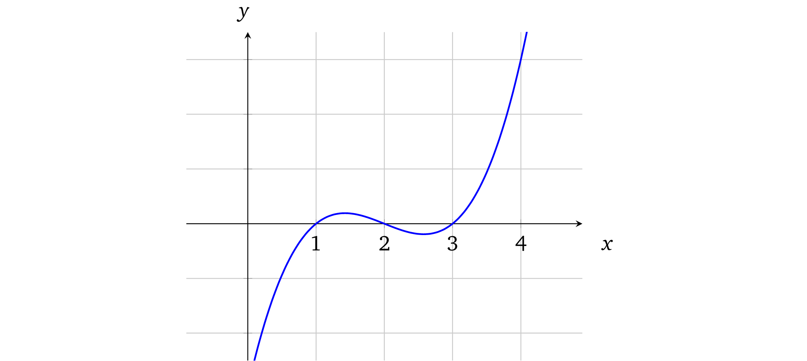
上面的曲线对应多项式：\(f(x) = x^3 -6x^2 + 11x - 6\)。多项式的阶数取决于 \(x\) 的最大指数，当前多项式的阶数是 3。
多项式有一个非常好的特性，就是如果我们有两个阶为 \(d\) 的不相等多项式，它们相交的点数不会超过 \(d\)。例如，稍微修改一下原来的多项式为 \(x^3 - 6x^2 + \mathbf{10}x - \mathbf{5}\) 并在图上用绿色标出：
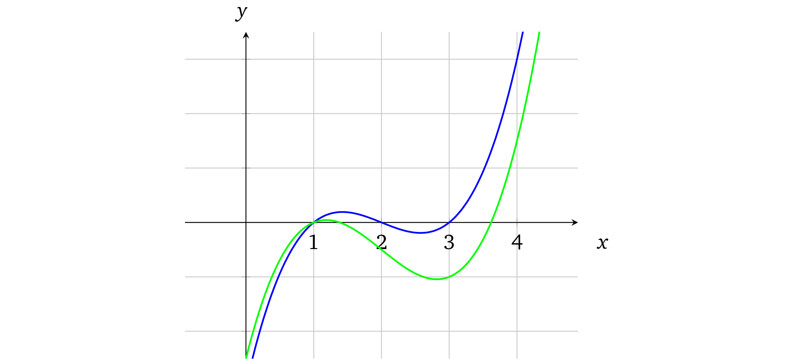
这一点微小的修改就产生了变化很大的曲线。事实上，我们不可能找到两条不同的曲线，它们会在某段区域内重合（它们只会相交于一些点）。
这是从找多项式共同点的方法中得出的性质。如果要找到两个多项式的交点，就要先令它们相等。例如，要找到多项式与 \(x\) 轴的交点（即 \(f(x) = 0\)），我们就要令 \(x^3 - 6x^2 + 11x - 6 = 0\)，等式的解就是共同点：\(x = 1\)、\(x = 2\) 和 \(x = 3\)。在上面图中也可以很清晰地看出这些解，也就是图上蓝色曲线和 \(x\) 轴相交的地方。
同样，我们也可以令上文中原始的多项式和修改后的多项式相等，找到它们的交点。
$$x^3 - 6x^2 + 11x - 6 = x^3 - 6x^2 + \mathbf{10}x - \mathbf{5}$$
$$x - 1 = 0$$
多项式化简后的结果阶数为 1，它有一个很明显的解 \(x = 1\)。因此这两个多项式有一个交点。
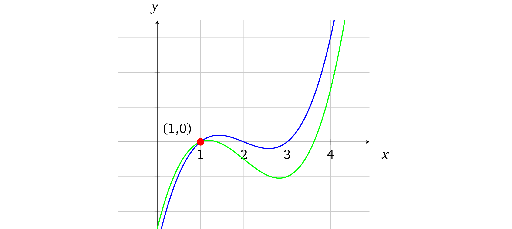
任意一个由阶数为 \(d\) 的多项式组成的等式，最后都会被化简为另外一个阶数至多为 \(d\) 的多项式，这是因为等式中没有能用来构造更高阶数的乘法。例如：\(5x^3 + 7x^2 - x + 2 = 3x^3 - x^2 + 2x - 5\)，简化为 \(2x^3 + 8x^2 - 3x + 7 = 0\)。另外代数的基本原理也告诉我们，对于一个阶数为 \(d\) 的多项式至多有 \(d\) 个解（3.2 节将对此进行详细介绍），因此也就至多有 \(d\) 个共同点。
所以我们可以得出结论，任何多项式在任意点的计算结果（更多关于多项式求值可以参考：[Pik13]）都可以看做是其唯一身份的表示。我们来计算一下当 \(x = 10\) 时，示例多项式的结果。
$$ x^3 - 6x^2 + 11x - 6 = 504 $$
$$ x^3 - 6x^2 + 10x - 5 = 495 $$
事实上，在 \(x\) 可以选择的所有值中，至多只有三个值能够使这些多项式相等，其它的值都是不相等的。
这也是为什么如果一个证明者声称他知道一些验证者也知道的多项式（无论多项式的阶数有多大）时，他们就可以按照一个简单的协议去验证：
- 验证者选择一个随机值 \(x\) 并在本地计算多项式结果
- 验证者将 \(x\) 值提供给证明者，并让他计算相关的多项式结果
- 证明者代入 \(x\) 到多项式计算并将结果提供给验证者
- 验证者检查本地的计算结果和证明者的计算结果是否相等，如果相等就说明证明者的陈述具有较高的可信度
例如，我们把 \(x\) 的取值范围定在 1 到 \(10^{77}\)，那么计算结果不同的点的数量就有 \(10^{77} - d\) 个。因而 \(x\) 偶然「撞到」这 \(d\) 个结果相同的点中任意一个的概率就等于：\(\frac{d}{10^{77}}\)（几乎可以认为是不可能）。
注：与低效的位检查协议相比，新的协议只需要一轮验证就可以让声明具有非常高的可信度（如果假设 \(d\) 远小于其取值范围的上限，就几乎是 \(100%\) 了）
这也是为什么即使可能存在其他的证明媒介，多项式依然是 zk-SNARK 相对核心的部分。
译者注：这一节告诉了我们多项式的一个重要性质：我们不可能找到共享连续段的两条不相等曲线，任何多项式在任意点的计算结果都可以看做是其唯一身份的标识。也就是说只要能证明知道某个随机点对应的多项式上的值就可以证明知道这个多项式（只有知道了多项式，才能算出这个点对应的值），这个性质是下面所有证明的核心。
这就是 Schwartz–Zippel 定理，它可以扩展到多变量多项式，即在一个多维空间内形成的一个曲面。这个定理会在多个零知识证明方案的证明中反复出现。
多项式的非交互式零知识
证明多项式的知识
我们的讨论从证明多项式的知识开始，再将证明协议逐步转换成一种通用的方法，在这个过程中我们也将发现多项式的很多其他性质。
但是到目前为止，我们的协议还只是一个很弱的证明，因为协议中并没有采取任何措施去保证参与方必须按照协议的规则生成证明，所以参与方只能互相信任。例如，证明者并不需要知道多项式，也可能通过其他方式得到正确的答案。而且，如果验证者要验证的多项式的解的取值范围不够大，比如我们前文说的 10，那么就可以去猜一个数字，猜对答案的概率并不是可以忽略不计的。因而我们必须要解决协议中的这个缺陷，但在解决问题之前首先要思考一下，知道多项式意味着什么呢？一个多项式可以用下面的形式来表示（其中 \(n\) 指的是多项式的阶）：
$$c_n x^n + ... + c_1 x^1 + c_0 x^0$$
如果一个人说他或她知道一个一阶多项式（即：\(c_1 x^1 + c_0\)），那么这就意味着他或她一定知道系数 \(c_0, c_1\) 的值。这个系数可以是包括 \(0\) 在内的任意值。
假设证明者声称他知道一个包含 \(x = 1\) 和 \(x = 2\) 两个解的三阶多项式。满足此条件的一个有效的多项式就是 \(x^3 - 3x^2 + 2x = 0\)。因为对于 \(x = 1\)：\(1 - 3 + 2 = 0\)，对于 \(x = 2\)：\(8 - 12 + 4 = 0\)。
让我们先来仔细研究一下这个解的结构。
译者注：这一节告诉了我们多项式的一个本质——多项式的「知识」就是多项式的系数。所谓「知道」多项式就是指「知道」多项式的系数。
因式分解
代数的基本定理表明了任意的一个多项式只要有解，就可以将它分解成线性多项式（即一个阶数为 1 的多项式代表一条线），因此，我们可以把任意有效的多项式看成是其因式的乘积：
$$(x - a_0)(x - a_1)...(x - a_n) = 0$$
也就是说如果任意一个因式为零，那么整个等式都为零，式子中所有的 \(a\) 就是多项式的所有解。
事实上，我们的例子可以分解为以下多项式：
$$x^3 - 3x^2 + 2x = (x - 0)(x - 1)(x - 2)$$
所以这个多项式的解（\(x\) 的值）就是：\(0, 1, 2\)，在任何形式下多项式的解都可以很轻松地被验证，只不过因式的形式可以让我们一眼就看出这些解（也称为根）。
我们再回到前面的问题，证明者宣称他知道一个阶数为 3，其中两个根分别为 1 和 2 的多项式，也就是说这个多项式的形式为：
$$(x - 1)(x - 2) \cdot \ldots$$
换句话说 \((x - 1)\) 和 \((x - 2)\) 是问题中多项式的两个因式。因而如果证明者想要在不揭示多项式的前提下证明他的多项式确实有这两个根，那么他就需要去证明他的多项式 \(p(x)\) 是 \(t(x) = (x - 1)(x - 2)\)（也称为目标多项式）和一些任意多项式 \(h(x)\)（也就是我们的例子里面的 \((x - 0)\)）的乘积，即：
$$p(x) = t(x) \cdot h(x)$$
换句话说，存在一些多项式 \(h(x)\) 能够使得 \(t(x)\) 与之相乘后等于 \(p(x)\)，由此得出，\(p(x)\) 中包含 \(t(x)\)，所以 \(p(x)\) 的根中也包含 \(t(x)\) 的所有根，这也就是我们要证明的东西。
自然地算出 \(h(x)\) 的方式就是直接相除：\(h(x) = \frac{p(x)}{t(x)}\)。如果一个证明者不能找到这样一个 \(h(x)\) 也就意味着 \(p(x)\) 中不包含因式 \(t(x)\)，那么多项式相除就会有余数。
例如我们用 \(p(x) = x^3 - 3x^2 + 2x\) 除以 \(t(x) = (x - 1)(x - 2) = x^2 - 3x + 2\)：
注：左边的式子是分母，右上角的是计算结果。底部是余数（多项式相除的解释及示例可以参考 [Pik14]）。
我们算出结果 \(h(x) = x\)，没有余数。
注：为了简化起见，后面我们会用多项式的字母变量来代替计算结果值，例如：\(p = p(r)\)。
译者注：多项式可以被因式分解成它的根的因式的乘积。这个性质就意味着，如果一个多项式有某些解，那么它被因式分解后的式子中一定包含这些解的因式。
有了这个性质，我们就可以进行一些证明了。
利用多项式一致性检查协议我们就可以比较多项式 \(p(x)\) 和 \(t(x) \cdot h(x)\)：
- 验证者挑选一个随机值 \(r\), 计算 \(t = t(r)\)（也就是求值），然后将 \(r\) 发送给证明者
- 证明者计算 \(h(x) = \frac{p(x)}{t(x)}\)，并对 \(p(r)\) 和 \(h(r)\) 进行求值，将计算结果 \(p, h\) 提供给验证者
- 验证者验证 \(p = t \cdot h\) ，如果多项式相等，就意味着 \(t(x)\) 是 \(p(x)\) 的因式
实践一下，用下面的例子来执行这个协议：
$$p(x) = x^3 - 3x^2 + 2x$$
$$t(x) = (x - 1)(x - 2)$$
- 验证者选一个随机数 23，并计算 \(t = t(23) = (23 - 1)(23 - 2) = 462\)，然后将 23 发送给证明者
- 证明者计算 \(h(x) = \frac{p(x)}{t(x)} = x\), 并对 \(p(r)\) 和 \(h(r)\) 进行求值，\(p = p(23) = 10626\)，\(h = h(23) = 23\)，将 \(p, h\) 提供给验证者
- 验证者再验证 \(p = t \cdot h\)：\(10626 = 462 \cdot 23\) 是正确的，这样陈述就被证明了
相反，如果证明者使用一个并不包含必要因式的不同 \(p'(x)\)，例如 \(p'(x) = {\color{red}2}x^3 - 3x^2 + 2x\), 那么：
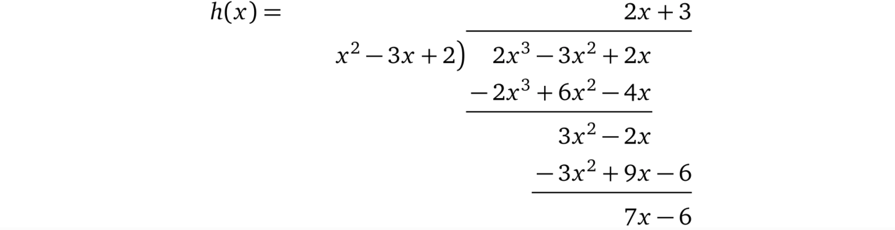
我们算出结果 \(2x + 3\) 和余数 \(7x - 6\)，即：\(p(x) = t(x) \times (2x + 3) + 7x - 6\)。这就意味着验证者为了计算出结果不得不用余数除以 \(t(x)\)，\(h(x) = 2x + 3 + \frac{7x - 6}{t(x)}\)。不过由于 \(x\) 是验证者随机选择的，就有极低（但仍然不可忽略）的概率余数 \(7x - 6\) 最终可以被 \(t(x)\) 整除。如果后面验证者要另外再检查 \(p\) 和 \(h\) 必须是整数的话，这个证明就会被拒绝。
不过这个校验同时也要求多项式系数也是整数，这对协议产生了极大的限制。
这就是为什么接下来我们要介绍能够使余数不被整除的密码学原理的原因，尽管这个原始值是有可能被整除的。
注：虽然为了简化而尽可能少地使用数学符号，但如果忽视这个无处不在的基本符号「\('\)（上撇）」的话将不利于理解。这个符号的目的是为了强调一个经过初始变量变换或者推导得到的新变量。例如，如果我们想要将 \(v\) 乘以 \(2\) 并给将它赋值给一个新的变量，我们可以使用：\(v' = 2 \cdot v\)。
备注 3.1 现在我们就可以在不知道多项式的前提下根据特定的性质来验证多项式了，这就已经给了我们一些零知识和简明性的特性。但是，这个结构中还存在很多问题：
- 证明者可能并不知道他所声称的 \(p(x)\)，他可以计算 \(t = t(r)\)，然后选择一个随机值 \(h\)，由此计算出 \(p = t \cdot h\)。因为等式是成立的，所以也能通过验证者的校验。
- 因为证明者知道随机点 \(x = r\) ，所以他可以构造出一个任意的多项式，这个任意多项式与 \(t(r) \cdot h(r)\) 在 \(r\) 处有共同点。
- 在前面的陈述中，证明者声称他知道一个特定阶数的多项式，但现在的协议对阶数并没有明确的要求。因而证明者完全可以用一个满足因式校验的更高阶数的多项式来欺骗验证者。
下面我们就要逐一解决这些问题。
译者注：利用因式的性质构造出了一个证明协议，但这个协议存在一些缺陷，主要是由于：
- 证明者知道了 \(t(r)\)，他就可以反过来任意构造一个可以整除 \(t(r)\) 的 \(p(r)\)
- 证明者知道了点 \((r,\ t(r) \cdot h(r))\) 的值，就可以构造经过这一点的任意多项式，同样满足校验
- 协议并没有对证明者的多项式阶数进行约束
模糊求值
备注 3.1 中的前两个问题是由于暴露了原始值而导致的，也就是证明者知道了 \(r\) 和 \(t(r)\)。但如果验证者给出的这个值像放在黑盒里一样不可见的话就完美了，也就是一个人在不破坏协议的前提下也依然可以在这些模糊的值上完成计算。这一点类似于散列函数，从计算结果很难推测出原始值。
同态加密
这也就是要设计同态加密的原因。它允许加密一个值并在密文上进行算术运算。获取加密的同态性质的方法有多种，我们来介绍一个简单的方法。
总体思路就是我们选择一个基础的（基数需要具有某些特定的属性）的自然数 \(g\)（例如 5），然后我们以要加密的值为指数对 \(g\) 进行求幂。例如，如果我们要对 3 进行加密：
$$5^3 = 125$$
这里 125 就是 3 对应的密文。如果我们想要对被加密的值乘 2，我们可以以 2 为指数来对这个密文进行计算。
$$125^2 = 15625 = \left(5^3\right)^2 = 5^{2 \times 3} = 5^6$$
我们不仅可以用 2 来乘以一个未知的值并保持密文的有效性，还可以通过密文相乘来使两个值相加，例如 3 + 2：
$$5^3 \cdot 5^2 = 5^{3 + 2} = 5^5 = 3125$$
同样的，我们还可以通过相除提取加密的数字，例如 5 - 3
$$\frac{5^5}{5^3} = 5^5 \cdot 5^{-3} = 5^{5 - 3} = 5 ^ 2 = 25$$
不过由于基数 5 是公开的，很容易就可以找到被加密的数字。只要将密文一直除以 5，直到结果为 1，那么做除法的次数也就是被加密的值。
模运算
这里就到了模运算发挥作用的地方了。模运算的思路如下：除了我们所选择的组成有限集合的前 \(n\) 个自然数（即 \(0, 1, \ldots, n - 1\)）以外，任何超出此范围的给定整数，我们就将它「缠绕」起来。例如，我们选择前六个数。为了说明这一点，可以把它看做一个有六个单位大小相等刻度的圆；这就是我们所说的范围（通常指的是有限域）。
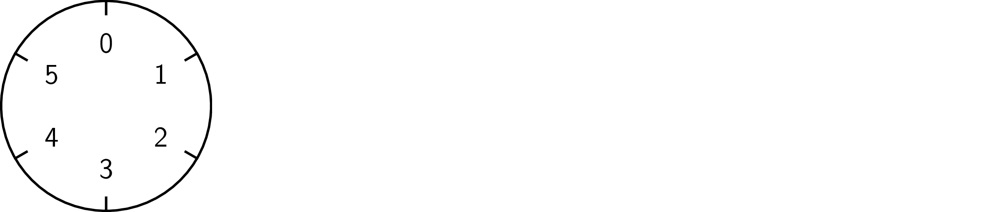
现在我们看一下数字八应该在哪里。打个比方，我们可以把它看成一条长度为八的绳子：
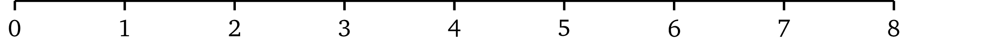
如果我们将绳子固定在圆圈的开头
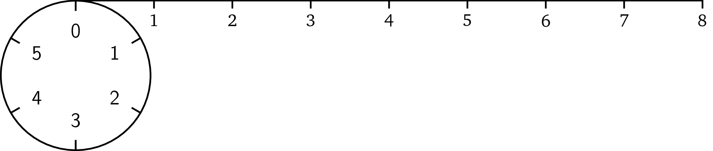
然后用绳子缠绕圆圈，我们在缠完一圈后还剩下一部分的绳子：
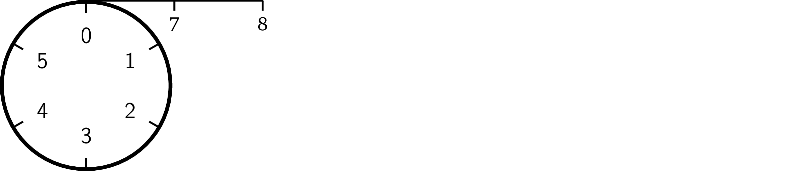
然后我们继续缠绕，这根绳子将在刻度 #2 的地方终止。
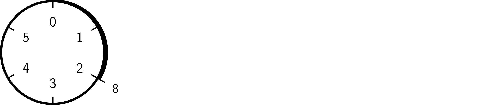
这就是模运算操作的结果。无论这根绳子多长，它最终都会在圆圈一个刻度处终止。因而模运算结果将保持在一定范围内（例子中是 0 到 5）。长度为 15 的绳子将会在刻度 3 的地方终止，即 6 + 6 + 3（缠两个完整的圈并剩下 3 个单位长的部分）。负数运算类似，唯一不同的地方就是它是沿相反方向缠绕的，如 -8 的取模结果是 4。
我们执行算术运算，结果都将落在这个 \(n\) 的范围内。现在开始我们将用符号「\(\mathrm{mod}\ n\)」来表示这个范围内的数。
$$3 \times 5 = 3 \ (\mathrm{mod}\ {6})$$
$$5 + 2 = 1 \ (\mathrm{mod}\ {6})$$
另外，模运算最重要的性质就是运算顺序无所谓。例如，我们可以先做完所有的运算，然后再取模，或者每运算完一步都去取模。例如 \((2 \times 4 - 1) \times 3 = 3 \ (\mathrm{mod}\ {6})\) 就等于：
$$2 \times 4 = 2 \ (\mathrm{mod}\ {6})$$
$$2 - 1 = 1 \ (\mathrm{mod}\ {6})$$
$$1 \times 3 = 3 \ (\mathrm{mod}\ {6})$$
那么模运算到底有什么用呢？如果我们使用模运算，从运算结果再回到原始值并不容易，因为很多不同的组合会产生同样的运算结果：
$$5 \times 4 = 2 \ (\mathrm{mod}\ {6})$$
$$4 \times 2 = 2 \ (\mathrm{mod}\ {6})$$
$$2 \times 1 = 2 \ (\mathrm{mod}\ {6})$$
$$\ldots$$
没有模运算的话，计算结果的大小会给找出原始值提供一些线索。模运算既能把这一信息隐藏起来，又可以保留常见的算术属性。
强同态加密
我们再回到同态加密上，使用模运算，例如取模 7，我们可以得到：
$$5^1 = 5 \ (\mathrm{mod}\ {7})$$
$$5^2 = 4 \ (\mathrm{mod}\ {7})$$
$$5^3 = 6 \ (\mathrm{mod}\ {7})$$
$$\ldots$$
不同指数下运算将会得到同样的结果：
$$5^5 = 3 \ (\mathrm{mod}\ {7})$$
$$5^{11} = 3 \ (\mathrm{mod}\ {7})$$
$$5^{17} = 3 \ (\mathrm{mod}\ {7})$$
$$\ldots$$
这样就很难知道指数是多少了。事实上，如果模取得相当大，从运算结果倒推指数运算就不可行了，现代密码学很大程度上就是基于这个问题的困难程度。
方案中所有的同态性质都在模运算中保留了下来：
$$\mathrm{加密：} 5^3 = 6 \ (\mathrm{mod}\ {7})$$
$$\mathrm{乘法：} 6^2 = {(5^3)}^2 = 5^6 = 1 \ (\mathrm{mod}\ {7})$$
$$\mathrm{加法：} 5^3 \cdot 5^2 = 5^5 = 3 \ (\mathrm{mod}\ {7})$$
注：模相除有点难，已经超出范围了。
我们来明确地说明一下加密函数：\(E(v) = g^v \ (\mathrm{mod}\ {n})\)，这里 \(v\) 就是我们要加密的值。
备注 3.2 这个同态加密模式有一个限制，我们可以把一个加密的值和一个未加密的值相乘，但我们不能将两个加密的值相乘（或者相除），也就是说我们不能对加密值取幂。虽然这些性质第一感觉看上去很不友好，但是却构成了 zk-SNARK 的基础。这个限制将在 3.6.1 节中讲到。
译者注：通过模运算形成的集合被称为有限域，而通过计算指数再进行模运算形成的集合构成循环群。常见的同态加密方式除了整数幂取模之外，还有椭圆曲线上的倍乘。
加密多项式
配合这些工具，我们现在就可以在加密的随机数 \(x\) 上做运算并相应地修改零知识协议了。
我们来看一下如何计算多项式 \(p(x) = x^3 - 3x^2 + 2x\)。前面已经明确了，知道一个多项式就是知道它的系数，在这个例子中也就是知道：1，-3，2。因为同态加密并不允许再对加密值求幂，所以我们必须要给出 \(x\) 的 1 到 3 次幂的加密值：\(E(x), E(x^2), E(x^3)\)，那么我们要计算的加密多项式就是：
$${E\left(x^3\right)}^1 \cdot {E\left(x^2\right)}^{-3} \cdot {E\left(x\right)}^{2} =$$
$${\left(g^{x^3}\right)}^1 \cdot {\left(g^{x^2}\right)}^{-3} \cdot {\Big( g^{x} \Big)}^2 =$$
$$g^{1x^3} \cdot g^{-3x^2} \cdot g^{2x} =$$
$$g^{x^3 - 3x^2 + 2x}$$
通过这些运算，我们就获得了多项式在一些未知数 \(x\) 处的加密计算结果。这确实是一个很强大的机制，因为同态的性质，同一个多项式的加密运算在加密空间中始终是相同的。
我们现在就可以更新前一个版本的协议了，比如对于阶数为 \(d\) 的多项式：
-
验证者
- 取一个随机数 \(s\)，也就是秘密值
- 令指数 \(i\) 取值为 \(0, 1, ..., d\) 时分别计算对 \(s\) 求幂的加密结果，即：\(E(s^i) = g^{s^i}\)
- 代入 \(s\) 计算未加密的目标多项式：\(t(s)\)
- 把对 \(s\) 求幂的加密结果提供给证明者：\(E(s^0), E(s^1), ..., E(s^d)\)
-
证明者
-
计算多项式 \(h(x) = \frac{p(x)}{t(x)}\)
-
使用加密值 \(g^{s^0}, g^{s^1}, \ldots, g^{s^d}\) 和系数 \(c_0, c_1, \ldots, c_n\) 计算
$$E\left( p(s) \right) = g^{p(s)} = \left(g^{s^d}\right)^{c_d} \cdots \left(g^{s^1}\right)^{c_1} \cdot \left(g^{s^0}\right)^{c_0}$$
然后同样计算
$$E\left( h(s) \right) = g^{h(s)}$$
-
将结果 \(g^p\) 和 \(g^h\) 提供给验证者
-
-
验证者
- 最后一步是验证者在加密空间内检查 \(p = t(s) \cdot h\)：
$$g^p = \left(g^h\right)^{t(s)} \quad \Rightarrow \quad g^p = g^{t(s) \cdot h}$$
注：因为证明者并不知道与 \(s\) 相关的任何信息，所以很难提出不合法但能匹配验证的计算结果。
尽管这个协议中证明者的灵活性有限，他依然可以通过其它的方式来伪造证明，无需实际使用验证者提供的 \(s\) 的幂的加密值。例如，如果证明者声称有一个满足条件的多项式，但只使用了 2 个幂值 \(s^3\) 和 \(s^1\)，这在当前协议中是不能验证的。
译者注：本节利用强同态加密这个工具，构造了一个相对较强的零知识证明协议。但是如上文所述，这里还是存在一些问题——无法验证证明者是否是真的使用了验证者提供的值来构造证明。
下一节中将会展示如何构造一个完备的多项式零知识证明协议。
从零开始学习 zk-SNARK（二）——多项式的非交互式零知识证明
限制多项式
上文说到，多项式的知识其实就是它的系数 c0, c1, …, ci 的知识。协议中我们是通过对秘密值 s 的幂的加密值再进行求幂来对系数进行“赋值”。我们已经限制了 prover 对 s 幂的加密值的选择, 但是这个限制并不是强制的 ，也就是说，prover 可以使用任何可能的方法找到满足下面等式的值 zp 和 zh
$Z_p = (Z_h)^{t(s)}$
再用这两个值来代替 gᵖ 和 gʰ 将它交给 verifier。所以 verifier 需要能够证明 prover 给出的值就是用 s 幂的加密值而不是其它值计算出来的。
我们看一个由一个变量和一个系数组成的一阶多项式的简单例子，对应的 s 的加密值为 E(s) = gˢ。这里我们要做的就是确保 prover 是拿 s 的加密值，即 gˢ ，而不是其他值与系数 c 做同态相乘的。所以结果一定是这个形式（c 为任意值）：
$(g^s)^c$
解决这个问题的一种方法就是用另一个“变换”的加密值做同样的操作，充当类似算术中“校验和”（Checksum） 的作用，以此确保结果是原始值的求幂值。
这个是通过 Knowledge-of-Exponent Assumption (简称 KEA) 方法来实现的，在 [Dam91] 中有介绍，更精准一点（注意 a 和 α(alpha)这两个字符的不同）说：
a）Alice 有一个值 a，她想要 Bob 对其进行任意指数的求幂（这里 a 是一个有限域群的生成器），唯一的要求是只能对 a 进行求幂，为了保证这一点，她要：
-
选择一个随机数 α
-
计算 a' = a α(mod n)
-
提供一个元组 (a, a') 给 Bob, 然后让他对这两个值执行任意的求幂运算，返回结果元组 (b, b')，这里的指数 “α-变换” 依然保持不变，即 bα = b'(mod n)
b) 因为 Bob 无法从元组 (a, a') 中提取 α 的值，通过暴力破解也难以实现，那就可以推断 Bob 生成有效元组的唯一方法就是执行下面的步骤：
- 选择一个值 c
- 计算 b=(a)c(mod n) 和 b' = (a')c (mod n)
- 回复 (b,b')
c) 有了回复的元组和 α，Alice 就可以验证等式：
(b)α = b'
(ac)α = (a')c
ac·α = (aα)c
结论是：
- Bob 在元组的两个值的计算上都用了同一个指数（即 c）
- Bob 只能用 Alice 原本的元组来保持 α 关系
- Bob 知道指数 c，因为构造验证值 (b,b′) 的唯一方式是用同一个指数
- Alice 并不知道 c，这和 Bob 不知道 α 的原因一样
- 虽然 c 是被加密的，但它的可能取值范围并不足够大到保持其零知识的性质，这个问题我们将在后面“零知识”那一节解决。
最后这个协议提供了一个证明给 Alice ，Bob 确实是用他知道的某个值对 a 进行求幂的，而且他也不能做别的任何操作，例如：乘法，加法，因为这样就会破坏 α-变换关系。
在同态加密中，求幂是对被加密值进行乘法运算。我们可以应用这个结构到一个简单的系数多项式 f(x) = c⋅ x的例子中：
-
verifier 选择随机数 s, α，然后提供令 x=s 的一阶及其转换的计算值：
$(g^s,g^{αs})$
-
prover 代入系数 c 计算:
$((g^s)^c,(g^{αs})^c) =(g^{cs},g^{αcs})$
-
verifier 验证：
$(g^{cs})^α = g^{αcs}$
这个结构“限制” prover 只能用 verifier 提供的加密的 s 进行计算，因而 prover 只能将系数 c 赋给 verifier 提供的多项式。现在我们可以扩展这种单项式上的方法到多项式上，因为计算是先将每项的分配分开计算然后再 “同态地” 相加在一起的（这个方法是 Jens Groth 在 [Gro10] 中介绍的）。所以如果给定 prover 一个指数为 s 的幂以及它们的变换的加密值，他就可以计算原始的和变换后的多项式，这里也必须要满足同样的校验。对于阶数为 d 的多项式：
-
verifier 提供加密值 $g^{s^0}$,$g^{s^1}$,…,$g^{s^d}$ 和他们的变换 $g^{αs^0}$,$g^{αs^1}$,…,$g^{αs^d}$
-
prover:
-
计算给定的带有 s 的幂的加密多项式
$g^{p(s)} = (g^{s^0})^{c_0} \cdot (g^{s^1})^{c_1}……(g^{s^d})^{c_d} = g^{(c_0s^0+c_1s^1+…+c_ds^d) }$
-
计算给定的带有 s 的幂的转换的加密“转换”多项式：
$g^{αp(s)} = (g^{αs^0})^{c_0} \cdot (g^{αs^1})^{c_1}……(g^{αs^d})^{c_d} = g^(c_0αs^0+c_1αs^1+…+c_dαs^d) = g^α(c_0s^0+c_1s^1+…+c_ds^d) $
-
将计算结果 $g^p$,$g^{p'}$ 发给verfier
-
-
verifier 校验：$(g^p)^α = g^{p'}$
前面的多项式例子 p(x) = x3 - 3x2 +2x 就变成了：
-
verifier 提供 $E(s^3)$, $E(s^2)$, $E(s)$ 和它们的变换 $E(αs^3)$, $E(αs^2)$, $E(αs)$
-
prover 计算：
$g^p = g^{p(s)} = (g^{s^3})^1 \cdot (g^{s^2})^{(-3)} \cdot (g^s)^2 = g^{s^3} \cdot g^{-3s^2} \cdot g^{2s} = g^{s^3-3s^2+2s}$
$g^{p'} = g^{αp(s)} = (g^{αs^3})^1 \cdot (g^{αs^2})^(-3) \cdot (g^αs)^2 = g^{αs^3} \cdot g^{-3αs^2} \cdot g^{2αs} = g^{α(s^3-3s^2+2s)}$
-
verifier 校验：$(g^p)^α = g^{p'}$
$(g^{s^3-3s^2+2s})^α = g^{α(s^3-3s^2+2s)}$
$g^{α(s^3-3s^2+2s)} = g^{α(s^3-3s^2+2s)}$
现在我们就可以确保 prover 是用了 verifier 提供的多项式而不是其它值做计算的了，因为别的方法不能够保持 α-变换。 当然如果 verifier 想要确保在 prover 的多项式中排除了 s 的某些次幂，如 j， 他就不提供对应的密文及其变换：
$g^{s^j}，g^{αs^j}$
与前面的协议相比，我们现在已经有了一个比较健壮的协议。但是尽管已经做了加密，在零知识 性质上也还依然存在一个很明显的缺陷：即理论上多项式参数 cᵢ 是一个很广的取值范围内的值，实际上这个范围可能很有限（比如前面例子中的 6），这就意味着 verifier 可以在有限范围的系数组合中进行暴力破解，最终计算出一个与 prover 的答案相等的结果。比如我们将每个系数的取值范围定为 100，多项式阶数为 2，那么大概会有 100 万种不同的组合，这里可以认为暴力破解只需要少于 100 万次的迭代。更重要的是，即使在只有一个系数，值为 1 的例子中，安全协议也应该能够保证其安全。
even@安比实验室: 有了 KEA，就可以约束 prover 只能通过用 verifier 提供的加密值去构造证明了。严格点讲，这里是用的是 KEA的扩展版本，叫做 The q-power Knowledge of Exponent Assumption.
零知识证明
因为 verifier 能够从 prover 发送的数据中提取未知多项式 p(x) 的知识 ，那么我们就来看一下这些提供的数据（证明）：
$g^p$，$g^{p'}$，$g^h$
它们参与到了下面的验证：
$g^p = (g^h)^{t(s)}$ (多项式 p(x) 有根 t(x))
$(g^p)^α = g^{p'}$ (用了正确形式的多项式)
问题是我们如何选择证明使得这个校验依然有效，同时又保证没有知识能被提取？
前面章节给了我们一个答案：我们可以使用随机值 *δ (delta)*来“变换”这些值, 如 (gp )δ。 现在，为了提取知识，就必须首先要知道一个不可知的值 δ。并且，这种随机化在统计学上与随机值没有什么区别。
为了保持这种关系，我们在 verifier 的检查中验证一下。等式的每一边都有一个 prover 提供的值。所以如果我们用同一个δ 来“变换” 每一个值，那么等式一定保持相等。
具体来讲，就是 prover 选择一个随机值 δ ，并用它对证明中的值进行求幂
$(g^{p(s)})^δ$ , $(g^{h(s)})^δ$ , $(g^{αp(s)})^δ$
然后提供验证内容给 verifier：
$(g^p)^δ = ((g^h)^δ)^{t(s)}$
$((g^p)^δ)^α = (g^{p'})^δ$
再合并一下我们就可以看到校验的等式依然成立：
$g^{δ \cdot p} = g^{δ \cdot t(s)h}$
$g^{δ \cdot αp} = g^{δ \cdot p'}$
注意零知识是如何轻而易举地融入到这个结构中去的，这通常也被称为"无成本的"零知识。
even@安比实验室: 借助这个”无成本的”技巧，就可以轻松实现零知了。但是这里实现零知识的方法和实际中的Pinocchio协议，还有Groth16 方案略有不同。实际方案中是用乘法乘以 $g^{δ\cdot t(s)}$。
非交互式
到现在为止，我们已经讲完了一个交互式的零知识方案。但为什么我们还需要有非交互式呢？因为交互式证明只对原始的 verifier 有效，其他任何人（其他的 verifier）都不能够信任这个证明，因为：
- verifier 可以和 prover 串通，告诉他密码参数 s, α，有了这些参数 prover 就可以伪造证明，就像前面 remark 3.1 提到的那样。
- verifier 也可以使用同样的方法自己伪造证明。
- verifier 必须保存 α and t(s) 直到所有相关证明被验证完毕，这就带来了一个可能造成秘密参数泄漏的额外攻击面。
因而 prover 就需要分别和每个 verifier 做交互来证明一个陈述（就是例子中指的多项式的知识）。
尽管交互式证明也有它的用处，例如一个 prover 只想让一个特定的 verifier （称为目标 verifier，更多的信息参见 [JSI96] ）确信，就不能再重复利用同一个证明去向别人证明这个声明了，但是当一个 prover 想让众多的参与者同时或者永久地确信的话，这种方法就很低效了。 prover 需要保持一直在线并且对每一个 verifier 执行相同的计算。
因而，我们就需要一个可以被重复使用，公开，可信，又不会被滥用的秘密参数。
我们先来思考一下如何在构造出秘密值 (t(s),α) 构造之后保证它的安全性。我们可以对其进行加密，方式与 verifier 在发送加密值给 prover 之前对 s 的幂使用的加密方式一致。但是 remark 3.2 中提到，我们使用的同态加密并不支持两个秘密值相乘，这一点对 t(s) 和 h 的加密值相乘以及 p 和 α 的加密值相乘的验证都很重要。这个问题适合用Pairing配对操作来解决。
even@安比实验室:这里非交互的证明协议将对参数加密，但引入了两个问题：
1）同态加密无法对两个加密值做乘法，那如何验证加密后的参数呢？
2）加密值一旦泄露，协议的信任关系将无法保证，如何确保参数的安全性？
加密值的相乘
配对操作（双线性映射）是一个数学结构，表示为函数 e(g,g)，它给定一个数据集中的两个加密的输入（即 ga, gb ），可以将他们确定性地映射到另一组不同的输出数据集上的它们的乘积，即 e(ga, gb) = e(g, g)ab：
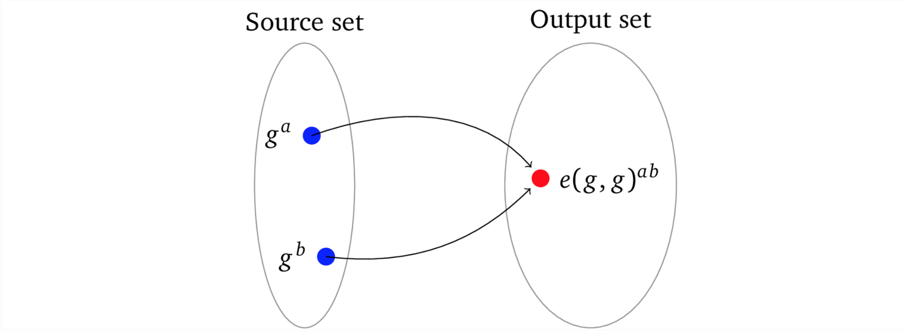
因为源数据集和输出数据集（通常被称为一个 group）是不同的，所以一个配对的结果不能用做其他配对计算的输入。我们可以将输出集（也称为“目标集”）视为“不同的宇宙”。因而我们不能用另一个加密值乘以结果，而且配对这个名称本身也表明了，我们一次只能将两个加密值相乘。
even@安比实验室: 换句话说，配对只支持 x * y 这种两个值的乘法，但不支持三个或以上的值相乘，比如不支持 x * y * z。
在某种意义上，这个类似于一个哈希函数，他将所有可能的输入值映射到可能的输出值的集合中的一个元素上，通常情况下这个过程是不可逆的。
注意：乍一眼看过去，这个限制可能会阻碍相关功能的实现，但在 zk-SNARK 中这反而是保证安全模式的最重要性质，参见 remark 3.3。
配对函数 e(g,g) 可以初步（严格来说是不对的）地类比成“交换”每一个输出的基数和指数的操作，使得基数 g 在交换过程中被修改成了指数的方式，即 ga → ag 。"被转换"的两个输入一起被修改了，这样原始值 a 和 b 就在同一个指数下相乘了，即：
$e(g^a,g^b) =a^g \cdot b^g =(ab)^g$
因而因为基数在“转换”中被修改了，所以在另一个配对中不能再使用这个结果 (ab)ᵍ （即：e((ab)ᵍ, gᵈ)）构造出想要的加密乘积 abd 了。配对的核心性质可以表示成下面的等式：
$e(g^a,g^b) =r(g^b,g^a)=e(g^{ab},g^1)=e(g^1,g^{ab}) =e(g^1,g^a)^b =e(g^1,g^1)^{ab}$
严格来讲一个配对的结果是在目标集的一个不同生成元 g 下对原始值乘积的加密，即 e(gᵃ, g ᵇ) = gᵃᵇ。因而它具备同态加密的性质，也就是说我们可以把乘法配对的加密乘积放到一起：
$e(g^a,g^b) \cdot e(g^c, g^d) = g^{ab} \cdot g^{cd} =g^{ab+cd} =r(g,g)^{ab+cd}$
注意：配对操作是通过改变椭圆曲线来实现这些性质的，现在我们用的符号 gⁿ 就代表曲线上一个由生成元自相加了 n 次的点，而不是我们前面用到的乘法群生成元。
[DBS04] 这个综述提供了学习配对的出发点。
可信任参与方的 Setup
有了配对，我们现在就准备去设置安全公开且可复用的参数了。假定一下我们让一个诚实的参与方来生成秘密值 s 和 α。只有 α 和所有必要的 s 的幂及其对应的 α-变换被加密了，那么原始数据就必须要被删除（ i 为 0，1,…,d ）：
$g^α，g^{s^i}，g^{αs^i}$
这些参数通常被称为 common reference string 或者 CRS。CRS 生成后，任何的 prover 和任何的 verifier 都可以使用它来构造非交互式的零知识证明协议。CRS 的优化版本将包含目标多项式的加密值 $g^{t(s)}$，尽管这个值并不重要。
把 CRS 分成两组（ i 为 0，1,…,d ）：
- proving key（也被称为 evaluation key）：$(g^{s^i},g^{αs^i})$
- verification key：$(g^{t(s)},g^α)$
只要能够乘以加密值，verifier 就可以在协议的最后一步验证多项式了：
-
有了verification key，verifier 就可以处理从 prover 那里得到的加密多项式的值 $g^p$，$g^h$，$g^{p'}$：
-
在加密空间中校验 p = t·h：
$e(g^p,g^1) = e(g^t,g^h)$
-
校验多项式的限制：
$e(g^p,g^α) = e(g^{p'},g)$
-
信任任意一个参与者
尽管受信任设置很有效率，但众多 CRS 用户也必须要相信生成者确实删除了 α 和 s ，这一点没有办法证明（proof of ignorance 是一个正在积极研究的领域 [DK18]），所以这种方法依然是无效的。因而很有必要去最小化或者消除这种信任。否则一个不诚实的参与方就可以构造假证明而不被发现。
一种解决办法就是由多个参与方使用前面小节中介绍的数学工具来生成一个组合式CRS，这样这些参与方就都不知道「秘密」了。下面是一个实现方案，我们假设有三个参与者 Alice，Bob 和 Carol ，对应为 A，B 和 C，其中 i为 1, 2, …, d：
-
Alice 选择随机数 $s_A$ 和 $α_A$，然后公开她的 CRS：
$(g^{s^i_A}，g^{α_A}，g^{α_As^i_A})$
-
Bob 选择他的随机数 $s_B$ 和 $α_B$，然后通过同态乘法结合 Alice 的 CRS：
$((g^{s_A^i})^{s_B^i},(g^{α_{A}})^{α_B},(g^{α_As_A^i})^{α_Bs_B^i}) = (g^{(s_As_B)^i},g^{α_Aα_B},g^{α_Aα_B(s_As_B)^i})$
然后公开两方 Alice-Bob 的 CRS 结果：
$(g^{s^i_{AB}},g^{α_{AB}},g^{α_{AB}s^i_{AB}})$
-
Carol 用她的随机数 $s_C$ 和 $α_C$ 做同样的事：
$((g^{s^i_{AB}})^{s^i_C},(g^{α_{AB}})^{α_C},(g^{α_{AB}s^i_{AB}})^{α_Cs^i_C}) = (g^{(s_As_Bs_C)^i},g^{α_Aα_Bα_C},g^{α_Aα_Bα_C(s_As_Bs_C)^i})$
然后公开 Alice-Bob-Carol 的 CRS:
$(g^{s^i_{ABC}},g^{α_{ABC}},g^{α_{ABC}s^i_{ABC}})$
这个协议最后我们就获得了一个混合的 sⁱ 和 α：
$s^i=s^i_As^i_Bs^i_C, α=α_Aα_Bα_C$
除非他们串谋，否则参与者们互相之间并不知道其他人的秘密参数。实际上，一个参与者必须要和其它所有的参与者串谋才能得到 s 和 α，这样在所有的参与者中只要有一个是诚实的，就没有办法伪造证明。
注意：这个过程可以被尽可能多的参与者重复完成
有一个问题是如何验证参与者在生成 CRS 时用的随机数值是一致的，因为攻击者可以生成多个不同的随机数 s₁*, s₂, …* 和 α₁*, α₂, …*,，然后代入这些不同的随机数去执行 s 的不同次幂计算（或提供随机数作为一个 CRS 的扩充），从而使 CRS 无效或者不可用。
庆幸的是，因为我们可以使用配对来乘以加密值，所以我们就可以从第一个参数开始逐一执行一致性校验，并且确保了每个参数都源于前一个。
-
我们用 s 的 1 次幂作为标准来校验每一个其它次幂的值与之是否保持一致
$e(g^{s^i},g) = e(g^{s^1},g^{s^{i-1}})|_{i\in{2,……,d}}$
例如：
- 2 次幂：$e(g^{s^2},g) = e(g^{s^1},g^{s^1}) => e(g,g)^{s^2} = e(g,g)^{s^{1+1}}$
- 3 次幂：$e(g^{s^3},g) = e(g^{s^1},g^{s^2}) => e(g,g)^{s^3} = e(g,g)^{s^{1+2}}$，等
-
我们现在再验证一下前面步骤中 α-变换后的值是否正确：
$e(g^{s^i},g^α) = e(g^{αs^i},g)|_{i\in[d]}$
例如：
- 3 次幂：$e(g^{s^3},g^α) = e(g^{αs^3,g}) => e(g,g)^{s^3 \cdot α} = e(g,g)^{αs^3}$，等。
这里 $i \in {2,……,d}$ 是“i 值分别为 2，3，…，d” 的缩写， [d] 是 1, 2, …, d 这个范围的缩写形式，在后面的章节这种表示方式更为常见。
当我们在验证每一个参与者秘密参数的一致性时，要注意参与者生成 CRS 的过程并没有强制后一个参与者（就是我们例子中的 Bob 和 Carol）都要使用前面已经公开的 CRS。因而如果一个攻击者是链上的最后一个参与者，他可以像链上的第一个参与者一样忽略前面的 CRS 随便构造一个有效的 CRS，这样他就变成了唯一一个知道秘密 s 和 α 的人。
为了解决这个问题，我们可以额外再要求除了第一个以外的每一个参与者去加密然后公开他的参数。例如，Bob 同样公开了：
$(g^{s^i_B},g^{α_B},g^{α_Bs^i_B})|_{i\in[d]}$
这就可以去验证 Bob 的 CRS 是乘以了 Alice 的参数后正常获得的，这里 i 为 1, 2,…, d。
- $e(g^{s^i_{AB}},g) = e(g^{s^i_A},g^{s^i_B})$
- $e(g^{α_{AB}},g) = e(g^{α_A},g^{a_B})$
- $e(g^{α_{AB}s^i_{AB}},g) = e(g^{α_As^i_A},g^{α_Bs^i_B})$
同样的，Carol 也必须证明她的 CRS 是乘以了 Alice-Bob 的 CRS 后正常获得的。
这是一个健壮的 CRS 设置模式，它并不完全依赖于单个参与者。事实上，即使其它所有的参与者都串谋了，只要有一个参与者是诚实的，他能够删除并且永远不共享它的秘密参数，这个 CRS 就是有效的。所以在设置 CRS （有时候被称为仪式 [Wil16]）的时候有越多不相关的参与者参与，伪造证明的可能性就越低。当有相互竞争的参与方参与的时候，就几乎不可能伪造证明了。这种模式能够包容其他一些怀疑这种 setup 可识别性的不受信方因为校验步骤确保了他们不会破坏（这里也包括很弱的 α 和 s 的使用）最终的 CRS。
>even@安比实验室: 现在有一些zkSNARK方案支持可升级的 CRS，任何怀疑CRS的参与方都可以对CRS 进行更新。此外还有一些 zkSNARK方案支持 Universal CRS，用不着对每一个电路进行受信任设置，而是只需要全局完成一次即可。除此之外，大量无需 Trusted Setup 的方案正在被充分研究。
##多项式的 SNARK
我们现在准备来合并这个逐步演化出来的 zk-SNARKOP 协议。为简洁起见，我们将使用大括号来表示由旁边的下标填充的一组元素，例如：
${s^i}_{i\in[d]}$
表示一组数 s1，s2， …， sd 。我们已经明确目标多项式 t(x) 和 prover 的多项式阶数 d：
- Setup
- 挑选随机值 s，α
- 计算加密值 $g^α$ 和 ${g^{s^i}}{i\in[d]}$，${g^{αs^i}}{i\in{0,…,d}}$
- 生成 proving key：$({g^{s^i}}{i\in[d]},{g^{αs^i}}{i\in{0,…,d}})$
- 生成 verification key: $(g^α，g^{t(s)})$
- Proving
- 分配系数 ${c_i}_{i\in{0,…,d}}$ (即知识)得 $p(x) = c_dx^d +…+ c_1x^1 + c_0x^0$
- 求多项式 $h(x) = p(x)/t(x)$
- 代入 ${g^{s^i}}_{i\in[d]}$ 计算多项式 $g^{p(s)}$ 和 $g^{h(s)}$ 的值
- 代入 ${g^{αs^i}}_{i\in[d]}$ 计算变换多项式 $g^{αp(s)}$ 的值
- 选择随机数 δ
- 构造随机化的证明 $π = (g^{δp(s)},g^{δh(s)},g^{δαp(s)})$
- verification
- 映射证明 π 为 $(g^p,g^h,g^{p'})$
- 验证多项式约束：$e(g^{p'},g) = e(g^p,g^α)$
- 验证多项式系数：$e(g^p,g) = e(g^{t(s)},g^h)$
Remark 3.3 如果 pairing 的结果有可能在其它类似的乘法协议中被复用，那么这里就完全没有安全性可言了，因为这样的话 prover 就可以构造
$g^{p'} = e(g^p,g^α)$
这样也可以通过"多项式约束"的检查：
$e(e(g^p,g^α)，g) = e(g^p,g^α)$
结论
我们用 zk-SNARK 协议来解决多项式问题的知识，不过这是一个有局限的例子。因为大家可以说 prover 只要用另外一个有界的多项式去乘以 t(x) 就可以很容易得构造出一个能够通过测试的多项式 p(x) ，并且这种结构也是有效的。
verifier 知道 prover 有一个有效的多项式，但是并不知道是哪一个。我们可以利用多项式的其他性质添加额外的证明，如**:**被多个多项式整除，是某个多项式的平方。虽然可能会有一个服务能够接受，存储和奖励所有经过证明的多项式，或者有一个需求，加密计算某种形式的未知多项式。然而若有通用方案就可以支撑无数的应用。
even@安比实验室:总结一下这篇文章中一步一步解决了下面的几个问题：
保证 prover 的证明是按照规则正确构造的 ——> KEA
保证知识的零知性 ——> “无成本的”δ 变换
可复用证明 ——> 非交互式
非交互中如何设置安全公开且可复用的参数 ——> 参数加密，verifier 借助密码配对进行验证
保证参数的生成者不泄密 ——> 多方的 Setup
至此，一个用来证明多项式知识的完整的 zk-SNARK 协议就构造出来了，不过现在的协议在通用性上依然还有很多限制，后面的文章将继续介绍如何构造通用的 zk-SNARK。
参考文献
[Dam91] — Ivan Damgård. “Towards practical public key systems secure against chosen ciphertext attacks”. In: Annual International Cryptology Conference. Springer. 1991, pp. 445–456.
[Gro10] — Jens Groth. “Short pairing-based non-interactive zero-knowledge arguments”. In: International Conference on the Theory and Application of Cryptology and Information Security. Springer. 2010, pp. 321–340.
[JSI96] — Markus Jakobsson, Kazue Sako, and Russell Impagliazzo. “Designated verifier proofs and their applications”. In: International Conference on the Theory and Applications of Cryptographic Techniques. Springer. 1996, pp. 143–154.
[DBS04] — Ratna Dutta, Rana Barua, and Palash Sarkar. Pairing-Based Cryptographic Protocols: A Survey. Cryptology ePrint Archive, Report 2004/064. https://eprint.iacr.org/2004/064. 2004.
[DK18] — Apoorvaa Deshpande and Yael Kalai. Proofs of Ignorance and Applications to 2-Message Witness Hiding. Cryptology ePrint Archive, Report 2018/896. https://eprint.iacr.org/2018/896. 2018.
[Wil16] — Zooko Wilcox. The Design of the Ceremony. 2016. url: https://z.cash/blog/the-design-of-the-ceremony/
从零开始学习 zk-SNARK（三）——从程序到多项式的构造
前面我们已经理顺了一个zk-SNARK 简单方案的思路，它包含了 zk-SNARK 大部分内在机制，现在我们继续完善方案，使它能执行零知识程序。
计算
来看一段用伪代码写的简单程序
Algorithm 1: Operation depends on an input
————————————————————————————————————————————————————————————————————
function calc(w, a, b)
if w then
return a × b
else
return a + b
end if
end function
从高处看，这段程序和我们协议里面的多项式并没有什么关系。我们现在就需要找到一种方式来将程序转换成多项式。第一步是将程序转换成数学语言，这个相对简单一些，声明可以表达成下面的形式（假定 w 是 0 或 1）：
f(w,a,b) = w(a · b)+(1-w)(a+b)
执行 calc(1, 4, 2) 和对 f (1, 4, 2) 求值都可以得到相同的结果：8。如果执行 calc(0, 4, 2) 和 f(0,4,2) 也都能够得到 6。其实我们可以用这种方法表达任何形式的有限程序。
接下来（上面的例子）需要我们证明的是,对于表达式 f(w,a,b) ，输入为 (1, 4, 2) 时输出为 8，换句话说，我们要校验多项式：
w(a · b)+(1-w)(a+b) = 8
even@安比实验室: 猜想一下，是否只要是能够用多项式表示的程序都可以做证明？
单个基本计算
尽管已经将程序转换成了由数学语言表达的一般计算形式，我们还是需要再把它翻译成多项式。我们先来仔细研究一下计算的本质。任何计算的内核都是由以下形式的基本运算组成的：
$左操作数 \quad 运算操作符 \quad 右操作数 \quad = 输出$
两个操作数（即值）与一个运算符（即+,*–,×,*÷）放在一起执行运算。例如操作数是 2 和 3，运算符为乘，那么运算出来就是 2 × 3 = 6。由于任何复杂的计算（或者程序）都是由一系列这样的基本运算组成的，所以首先我们需要知道在多项式中单个运算是怎么表示的。
多项式的算术性质
我们先来看一下如何将多项式和算术运算关联起来。例如有两个多项式 f(x) 和 g(x)，尝试将他们相乘使得 h(x) = f(x) × g(x)，在任意一个 x= r 处 h(x) 的计算结果都是 f(r) 和 g(r) 的乘积。再看一下如下两个多项式 f(x) = 2x2 – 9x+ 10 和 g(x) = – 4x2 + 15x – 9。以图形的形式展示：
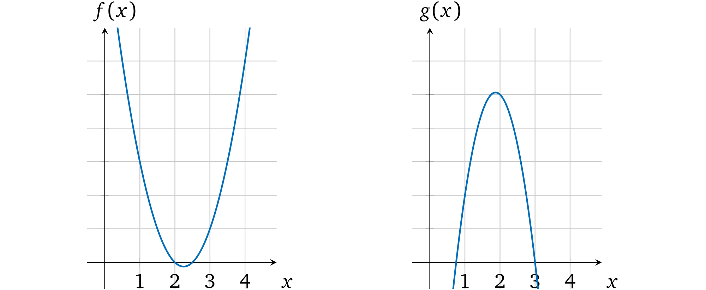
当 x = 1 时 f(1) = 2 – 9 + 10 = 3, g(1) = – 4 + 15 – 9 = 2。把两个多项式相乘： h(x) = f(x) × g(x) = – 8x4 + 66x3 – 193x2 + 231x– 90。从图中可以看出相乘的结果：
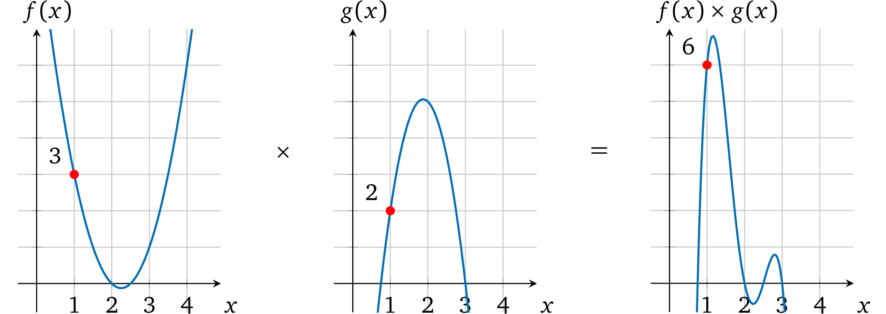
x = 1 时，计算 f(x) × g(x) 结果为：h(1) = – 8 + 66 – 193 + 231 – 90 = 6，也就是说当 x = 1时，h(x) 就是 f(x) 和 g(x) 相乘的结果 ，在 x 取其它值的时候也一样。
同样的如果我们将 f(x) 和 g(x) 相加，在 x=1 处的计算结果就是 5。
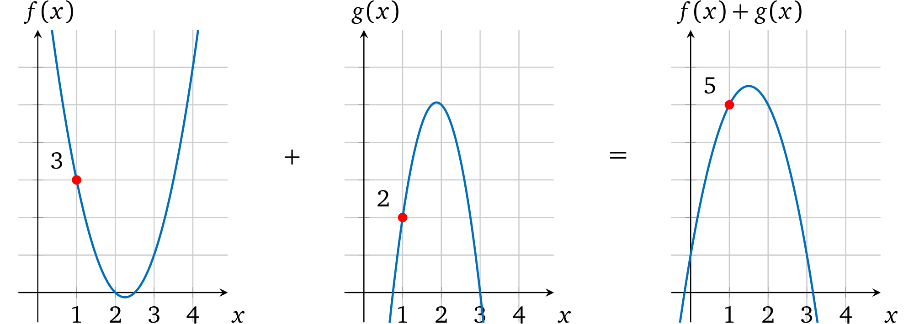
注意：在其它的 xs 取值处，多项式相加的计算结果也是将两者多项式的值加在一起的结果，例如你可以验证一下 x=2， x=3 处的结果。
如果我们可以将操作数的值表示为多项式(我们也确实可以这么做)，那么利用算术属性，我们就能够得到操作数的计算结果了。
even@安比实验室: 回忆一下，在本系列的第一篇——多项式的性质与证明中，我们曾经说过“任何多项式在任意点的计算结果都可以看做是其唯一身份的表示。”
反过来当我们知道某个多项式的时候，是不是也就意味着我们知道多项式上某个点的取值。这就是借助多项式来完成证明的依据。
限制运算
如果一个 prover 声称某两个数字的乘积，verifier 要怎样去验证呢？为了证明单个计算的正确性，我们就必须首先确保所提供的操作数的输出（结果）的正确性。我们再来看一下运算的形式：
左操作数 运算符 右操作数 输出
类似得我们也可以将其表示为一个运算多项式
l(x) 运算符 r(x) = o(x)
在一些选定的取值 a 处的运算:
- l(x) — 表示（运算结果为）左操作数
- r(x) — 表示（运算结果为）右操作数
- o(x) — 表示运算结果（输出）
因而在计算过程中如果操作数和结果都可以用多项式的形式正确地表示出来，那么 l(a) operator r(a) = o(a) 就能够成立。也就是说假如输出多项式 o(x) 所代表的值是由运算符 在操作数多项式 l(x) 和 r(x) 上进行乘法运算得出的正确结果，那么我们把输出多项式 o(x) 放到等式的左边就能够得到： l(a) operator r(a) – o(a) = 0，这也就表明了当取值为 a 时多项式 l(x) operator r(x) – o(x) 计算结果为 0 。那么只要多项式是有效的，运算多项式 就一定有一个根 a。因此，根据前面的基础这个多项式里面一定包含因式*(x-a)* （可以看因式分解一节），这就是我们要证明的目标多项式，即 t(x) = x – a。
例如，我们来看一个运算：3×2=6
可以用一个简单的多项式表示它： l(x) = 3x, r(x) = 2x, o(x) = 6x，取 a=1 进行计算，即 l(1) = 3；r(1) = 2；o(1) = 6。
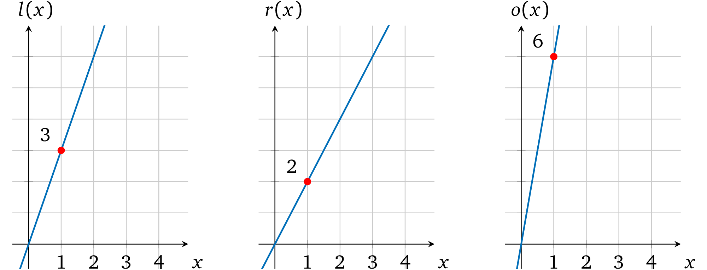
这个运算多项式就变成了：
l(x) × r(x) = o(x)
3x × 2x =6x
6x² -6x =0
在图上表示为：

注意，这个多项式有一个因子 (x = 1) ：
6x² -6x = 6x(x-1)
因而如果 prover 用 l(x), r(x), o(x) 这些多项式来代替 p(x) ，因为它们依然可以被 t(x) 整除，所以 verifier 就可以认为它们是有效的。相反，如果 prover 尝试用 4 来代替输出值去欺骗 verifier ，即 o(x) = 4x，那么运算多项式就变成了 6x2 – 4x= 0：

图中这个多项式并没有 x=1 的解，因而 l(x) × r(x) – o(x) 就不能被 t(x) 整除：
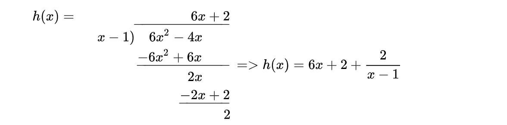
因而 verifier 不能接受这个不一致的计算结果（就像因式分解这一章描述的那样）
even@安比实验室: 在前面的协议中，我们要证明的多项式是 p(x) = t(x)h(x)，这里我们修改 p(x)，使得 p(x) = l(x)r(x)-o(x)。这里t(x)目标多项式的根就是对应能够计算出数学表达式的值的 x。
上面例子里面取 x=1 这个特殊值作为运算编码的位置。当然这里的 1 可以换成任何别的值，比如说换成 x=2，3，或101 等等。在[GGPR]与[PHGR]论文中，这个取值是一个随机值，被称为 “root”。
运算的证明
现在我们来修改一下最新协议使它支持单个乘法计算的证明。回到前面多项式的 SNARK一章，我们已经能够证明多项式 p(x) 的知识了，只不过现在要计算的是三个多项式 l(x), r(x), o(x)的知识。我们可以定义 p(x) = l(x) × r(x) – o(x)，但这里存在两个争议点。首先，在我们的协议中证明阶段是不能做加密值乘法计算的（即， l(s) × r(s)），因为配对只能用一次，这个要用在校验多项式的约束上。第二，这里给证明者留下了一个可以修改多项式结构但依然保留有效因式 t(x) 的机会，例如可以令 p(x) = l(x) 或者 p(x) = l(x) – r(x) 甚至是 p(x) = l(x) × r(x) + o(x)，只要这里的 p(x) 还保留着根 a 就可以了。这个修改本质上是让证明的内容变成了别的声明，所以这样是不行的。
所以 prover 必须要分别提供多项式 l(s), r(s), o(s) 值的证明，即协议必须修改要证明的多项式的知识。verifier 在加密空间中要验证的是 l(s) × r(s) – o(s) = t(s)h(s)。verifier 可以使用密码学配对来执行乘法，但还有一个小问题就是做减法(– o(x))是非常昂贵的计算（这需要去找到一个 gᵒ⁽ˢ⁾ 的逆向转换），这里我们可以把 o(x) 移到等式右边来： l(x)r(x) = t(x)h(x) + o(x)。在加密空间中，verifier 的验证就可以转换成：
e(gl(s), gr(s)) = e(gt(s),gh(s)) · e(go(s),g)
e(g,g)l(s)r(s) =e(g,g)t(s)h(s) ·e(g,g)o(s)
e(g,g)l(s)r(s) =e(g,g)t(s)h(s)+o(s)
注意：回忆一下加密配对的结果是支持通过乘法实现加密值的相加的，参见 加密值相乘 这一章节
保持 setup 阶段不变，协议更新为：
-
证明
- 分配对应的系数给 $l(x)$，$r(x)$，$o(x)$
- 计算多项式 $h(x) = \frac{l(x) \times r(x)-o(x)}{t(x)}$
- 使用 ${g^{s^i}}_{i\in[d]}$ 计算加密多项式 $g^{l(s)},g^{r(s)},g^{o(s)}$ 和 $g^{h(s)}$
- 使用 ${g^{\alpha s^i}}_{i\in{0,…,d}}$ 计算加密多项式 $g^{αl(s)},g^{αr(s)},g^{αo(s)}$
- 设置证明 $π = (g^{l(s)},g^{r(s)},g^{o(s)},g^{h(s)},g^{αl(s)},g^{αr(s)},g^{αo(s)})$
-
验证
-
定义证明 $π$ 为 $(g^l,g^r,g^o,g^h,g^{l'},g^{r'},g^{o'})$
-
检查多项式约束
$e(g^{l'},g) = e(g^l,g^α)$
$e(g^{r'},g) = e(g^r,g^α)$
$e(g^{o'},g) = e(g^o,g^α)$
-
检查运算的有效性 $e(g^l,g^r) = e(g^{t(s)},g^h) \cdot e(g^o,g)$
-
这个协议就能够证明两个值相乘的计算结果是正确的了。
你可能注意到了在这个新的协议中我们放弃了零知识 部分。这么做是为了简化协议的变换。后面的章节我们会再变回零知识。
even@安比实验室：上面例子里面取 x=1 这个特殊值作为运算编码的位置。当然这里的 1 可以换成任何别的值，比如说换成 x=2，3，或101 等等。在[GGPR]与[PHGR]论文中，这个取值是一个随机值，被称为 “root”。
多个运算
现在我们已经能够证明单个算术运算了，但是要怎么扩展到多个运算上呢（这是我们的最终目标）？我们来尝试一下增加一个基本运算。想一想计算 a × b × c 乘积的需求，在元素操作模型中，这代表着两个操作：
a × b = r1
r1 × c = r2
前面的讨论中我们通过对运算符多项式在任意取值 x 处 ，例如1，计算一个对应值，来表示一个操作数或者结果。有了这个性质的多项式并不会约束我们在不同 x 取值处用多项式来表示其他值。如示例中的 2，即：

这种独立性允许我们一次同时执行 两个运算并且又不会把这两者搞乱，即相互之间不会妨碍。这个多项式算术的结果就变成了：

可以看出这个多项式有两个根 x=1 和 x=2。因而也就是两次计算都被正确执行了。
even@安比实验室：这里的示例为了理解方便，选择了 x=1, x=2 两个位置。记住在完整的 zkSNARK 方案中，这些 “root” 值必须为有限域内的随机数，否则就会引入安全漏洞。
我们再来看一个有三个乘法运算的例子 2 × 1 × 3 × 2，它按照下面的步骤执行：
2 × 1 = 2
2 × 3 = 6
6 × 2 = 12
我们要把它们表示为操作数多项式，对于由 x ∈ {1, 2, 3} 所表示的计算， l(x) 相应的要等于 2，2 和 6。即通过点 (1, 2), (2, 2), (3, 6)，同样的 r(x) ∋ (1, 1),(2, 3),(3,2) ，o(x) ∋ (1, 2), (2, 6), (3, 12)。
但是，我们要怎么找到经过这些点的多项式呢？对于任何包含超过一个点的例子，就必须要使用特定的数学方法了。
多项式插值
为了构造操作数 和 输出多项式，我们需要一种方法来用给定的一组点去构造一个能经过所有这些点的弯曲 多项式，这叫插值。有几种不同的方法可以算出这个多项式：
- 一组未知方程
- 牛顿多项式
- 内维尔算法
- 拉格朗日多项式
- 快速傅里叶变换
我们以第一个方法为例。这个方法的思路是存在一个系数未知 ，阶数至多为 n 的特定的多项式 p(x) 能够经过给定的 n+1 个点，对于每个点 {(xᵢ, yᵢ)}, i ∈ [n+1]来说，多项式在 xᵢ 处的计算结果都等于 yᵢ，即对于所有的 i，p(xᵢ) = yᵢ 。在我们的例子中，三个点就可以变成一个用以下形式所表示的阶数为 2 的多项式：ax2 + bx +c =y。
我们令左运算多项式（绿色标出的）在每个点处与多项式结果值相等，然后对每个系数用其它术语表示出来再计算等式：

因而 左操作数多项式 就是：
l(x) = 2x2-6x+6
它和下面的图对应：
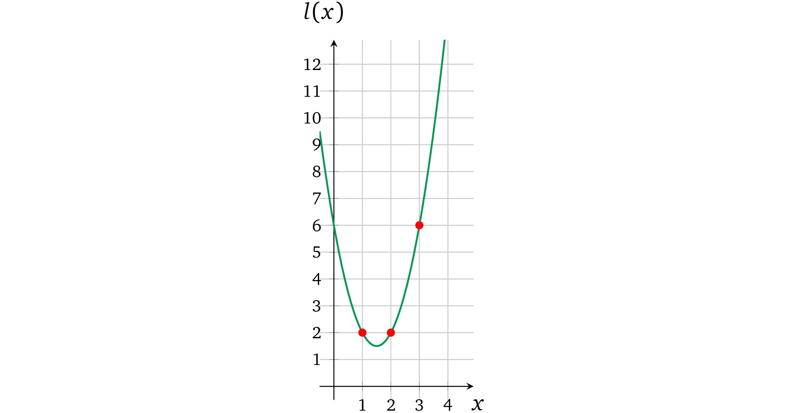
我们用相同的方式再计算 r(x) 和 o(x)：
$\textcolor{blue}{r(x)}=\frac{-3x^2+13x-8}{2}; \quad \textcolor{red}{o(x)}=x^2+x$
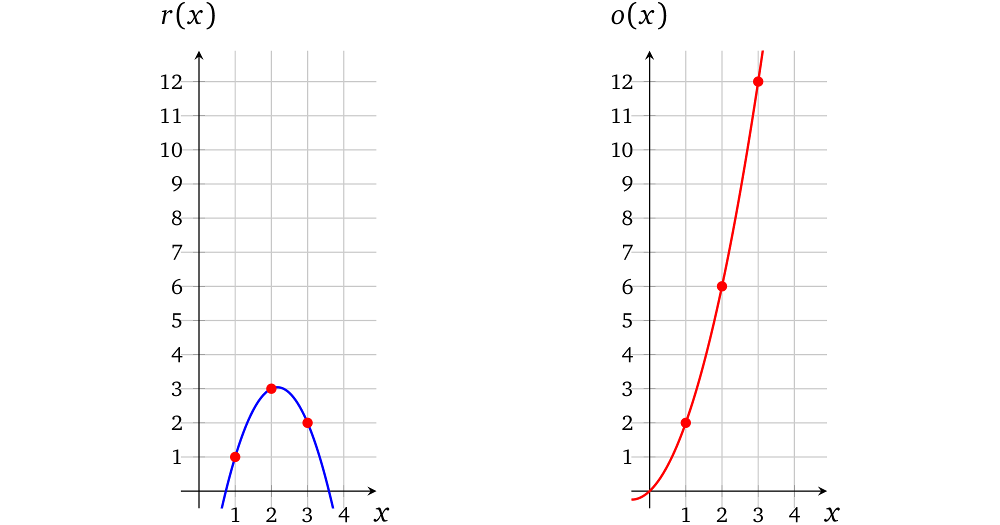
含有多个运算的多项式
现在我们有了代表三个运算的操作数多项式，再进一步看一下怎么去校验每个计算的正确性。回到 verifier 寻找等式 l(x) · r(x) – o(x) = t(x)h(x) 的过程。在这个例子中，因为计算是在点 x ∈ {1, 2, 3} 处被表示出来的，所以目标多项式在这些 xs 点处的计算结果必须为 0，换句话说， t(x)的根必须是 1，2 和 3，它的基本形式就是：

第一步将 l(x) 和 r(x) 相乘得到结果：

第二步：从 l(x) × r(x) 的结果中将 o(x) 减去：
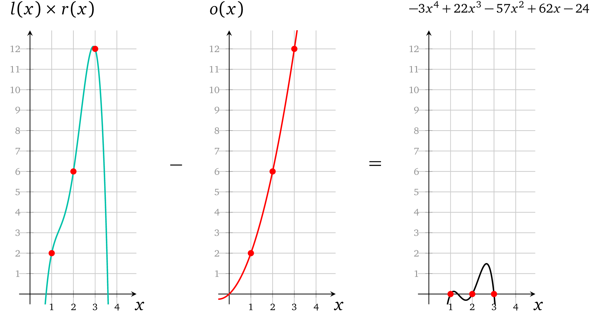
这里就已经可以看出每一个操作数相乘都对应了正确的结果。最后一步 prover 要算出一个有效因式：
$h(x) = \frac{l(x) \times r(x) -o(x)}{t(x)} = \frac{-3x^4 +22x^3 -57x^2 +63x -24}{(x-1)(x-2)(x-3)}$
通过长除法可以算出：
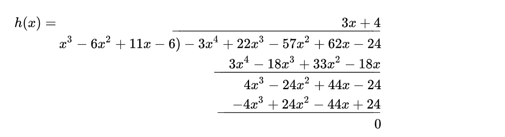
代入h(x) = – 3x+ 4a，verifier 可以计算 t(x)h(x)：
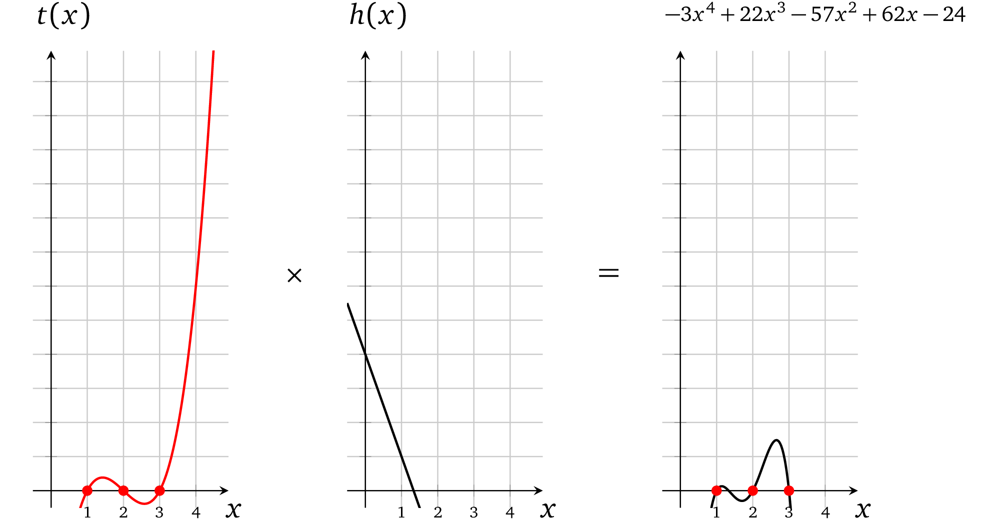
现在显然 l(x) × r(x) – o(x) = t(x)h(x) ，这就是我们要证明的内容。
even@安比实验室: 这里只需要一组多项式 l(x)，r(x)， o(x) 就可以将所有计算的约束关系表示出来了，有几个计算也就对应着目标多项式 t(x) 有几个根。
当前的协议似乎存在一些缺陷，多项式只能证明 prover 拥有一组多项式 l(x)，r(x)， o(x) ，在 t(x) 的几个根的取值处 l(x)·r(x)= o(x)，无法证明这组多项式符合我们要证明的数学表达式：
1）多个计算关系之间也是分开表示的，这些算式之间的关系也同样无法进行约束
2）由于 prover 生成的证明中只有计算结果，左操作数，右操作数，输出在计算中混用也不会被发现
3）由于左操作数，右操作数，输出是分开表示的，互相之间的关系无法进行约束
变量多项式
有了前文介绍的方法来解决证明多个计算多项式的问题，我们就可以一次证明多个运算（如上百万个甚至更多）了，但是这个方案还有一个关键的缺点。
如果证明中执行的“程序”在不同运算中使用了相同的变量作为操作数或输出，例如：
a × b = r1
a × c = r2
这里 a 代表两个运算中的左操作符多项式，如：

然而，因为我们的协议中是允许 prover 为多项式设置任何系数的，所以他可以不受限制得为不同计算（即，用一些 x 表示的多项式）中的 a 设置不同的值，即：
这个自由打破了一致性，有空间允许 prover 能去证明了一些并非 verifier 感兴趣的其它无关的程序执行。因而我们必须要确保每一个变量在所有运算中出现的地方都只有一个取值。
注意：文中的变量与常规的计算机科学中变量的定义不同，这里的变量是不可改变的而且每次执行都只赋值一次。
even@安比实验室：请务必注意“变量”的定义，它是程序中的变量，但是却又不能改，这不是很矛盾吗？其实，这里变量是指本文开头的示例伪代码中的那些不会被修改的变量。在 zkSNARK 论文中，这个「变量」其实有一个对应的名词叫做 assignment，是算术电路的「赋值」。而所有的assignments 是一个算术电路可满足性问题的解，包含了算术电路的输入值以及电路运算过程中输出的中间结果值。
单个变量的操作数多项式
我们来看一个简单的例子（就是当前的例子），在左操作符多项式 l(x) 表示的所有左操作数中只包含一个变量（即 a）。我们要找出是否有可以确保这个多项式在每一个运算中 a 都相同的方法。prover 可以设置不同值是因为他可以任意控制 x 的每个次幂的系数。因而如果这些系数是固定的，就可以解决问题了。
我们来仔细看看包含相等值的多项式。例如检查一下下面两个多项式，他们分别都表示了有两个相等值对应的运算（即在 x=1 和 x=2 处），这里第一个多项式的值为 1，第二个多项式的值为 2：
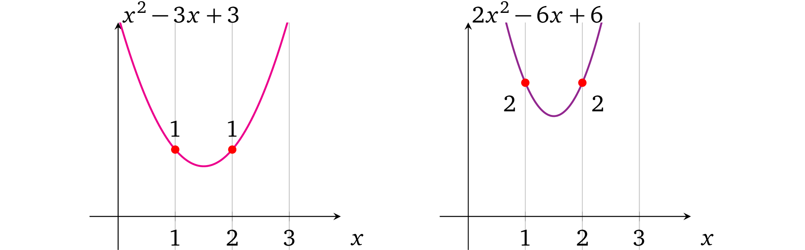
注意每个多项式中相应的系数是成比例的，也就是第二个多项式的系数是第一个的两倍大，即：
2x2-6x+6=2×(x2 -3x+3)
那么由于多项式的算术性质，如果我们想要同时地改变多项式中所有的值我们就需要改变它的比例，如果我们用一个数字乘以多项式，那么在每一个可能的 x 处的计算结果也要和相同的数字相乘（即，等比例变换）。为了验证这一点，我们尝试用 3 或者其它数字来乘第一个多项式。
因此，如果 verifier 需要在所有计算中强制 prover 设置相同的值，他就要限制 prover 只能修改比例而不是单个系数。
所以怎么保持系数比例不变呢？对于这个问题我们可以先思考一下在左运算多项式 中我们提供的证明是什么。是 l(x) 在一些秘密值 s 处的加密值：gl(s)，即，一个被加密了的数。我们已经从 限制多项式 这一节中知道了怎样通过一个α-变换去限制 prover 只能使用 verifier 提供的 s 的幂做计算，来使得单个运算能够满足同态乘法。
和限制单个求幂值相似，verfier 可以一次限制完整的多项式。而不只是提供单独的加密及其 α-移位 gs1,gs2,…,gsd,gαs1,gαs2,…,gαsd。
那么协议的过程就是：
- Setup
- 使用对应的系数构造相应的操作符多项式 l(x)
- 选择随机数 α 和 s
- 使用加密的 l(s) 和它的”转换“：$(g^{l(s)},g^{αl(s)})$ 来设置 proving key
- 设置 verification key：$(g^α)$
- proving
- 对于操作数值 v
- 乘以操作数多项式：$(g^{l(s)})^v$
- 乘以变换后的操作数多项式：$(g^{αl(s)})^v$
- 提供 操作数多项式 的乘法证明： $(g^{vl(s)},g^{vαl(s)})$
- 对于操作数值 v
- verification
- 解析证明为 $(g^l,g^{l'})$
- 验证比例：$e(g^{l'},g) = e(g^l,g^α)$
prover 需要返回同样的α-转换关系，因为无法从 proving key 中恢复出 α 所以保持这个变换的唯一方法就是用同一个值去分别乘以这两个加密值：gl(s) 和 gαl(s)。这个 prover 就无法修改 l(x) 的单个系数了，例如如果多项式为 l(x) = ax2 + bx+ c ，prover 只可以用一个值 v 去修改整个多项式： v⋅(ax2 + bx+ c) = v⋅ax2 + v⋅bx+ v⋅c。配对 使其不能与另一个多项式做乘法，所以也就无法提供 s 的单个求幂值的 *α-*变换。 prover 不能做加法或者减法因为：
$g^{α(l(x)+a'x^2+c')} \not= g^{αl(x)} \cdot g^{a'x^2} \cdot g^{c'}$ 这里也同样需要未加密的 α 的知识。
现在有了这个协议，不过怎么去构造操作数多项式 l(x) 呢？由于任何整数都可以通过乘以 1 得到它本身，所以多项式中对应的每个计算结果都应该为 1，即：
然后再让 prover 在其上”分配“一个值 a ：

Remark 4.1 由于 verification key 包含了加密了的 α，所以可以用多项式加（或者减）任意一个值 v'，即：
$g^{vl(s)} \cdot g^{v'} = g^{vl(s)+v'}$
$g^{αvl(s)} \cdot (g^α)^{v'} = g^{α(vl(s)+v')}$
$e(g^{α(vl(s)+v')},g) = e(g^{vl(s)+v'},g^α)$
因而可以修改多项式使其超出 verifier 的预期以及证明一个不同的声明，后面的章节我们将会解决掉这个问题。
@even@安比实验室：这一小节是解决这样一个问题，算术电路中一个 input wire 或者 output wire可能同时会作为多个门的输入wire，如何确保约束这些公用wire的问题。
由于要证明的数学表达式是公开的，那么各个算式之间的约束关系也就是公开的，那么我们就可以把构造多项式的工作交给 setup 环节，这样 prover 只要填上对应的数值就可以了。
上文这个方法就限制了在同一个操作数多项式上，不同的计算式中使用的同一个值的约束关系；同样若一个操作数多项式中用到了多个值，也可以将这些值全都加起来，如下文所述。
多变量的操作数多项式
因为只有当所有的左操作数使用同一个变量的时候我们才可以设置一个值。但是如果左操作数中再多一个值 d 要怎么做呢：
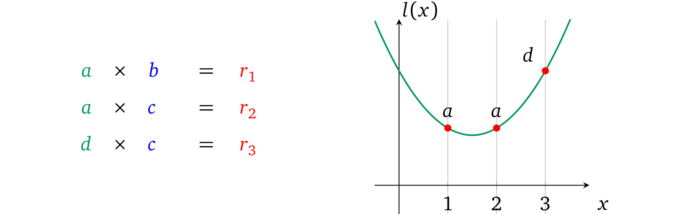
假如我们还使用相同的方法，我们无法分别得为每一个变量设置值，并且让这些变量乘到一起去。也就是说这个受限的多项式只能支持一个变量的情况。我们可以把操作数多项式 l(x) 分成操作数的变量多项式
$l_a(x)$ 和 $l_d(x)$（注意下标）
这与上一节的方法一致，变量 a 和 b 可以被赋值 并分别进行约束，然后加在一起就可以表示所有的左操作数变量了。因为我们将操作数的变量多项式 加在了一起，所以我们就要能够确保在每次计算中相加后的结果只表示所有操作符多项式 中的一个。
有了这个算术性质我们就可以逐一构造操作数变量多项式 了，这样如果变量 多项式在一个对应运算中被用做操作数，那么这一项就置为 1，否则就置为 0。0 跟任何值相乘结果都是零，当把他们相加在一起的时候也就可以忽略掉这一项。在我们的例子中这些变量多项式必须满足以下计算：
la(1) =1, la(2)=1, la(3)=0
ld(x)=0, ld(2)=0, ld(3)=1
图中表示为：
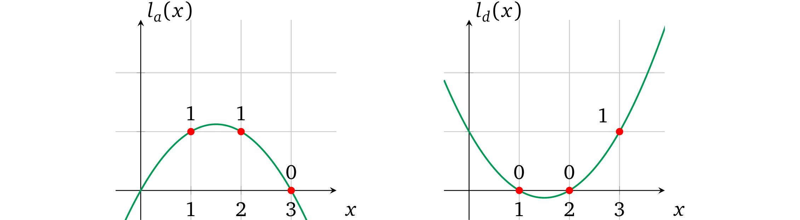
于是我们就可以将每个变量分开设置值，然后把他们加在一起来计算出操作数多项式，例如当 a = 3 和 d= 2 时：

注意：我们在一个值的后面使用下标表示它代表的变量，如, 3a 是一个用 3 实例化的变量 a。
现在起我们用大写字母来表示这个复杂的 操作符多项式，即
L(x) = ala(x) + dld(x)
计算结果为 L，也就是 L=L(s)。仅当每一个操作数的变量多项式 是由 verifier 约束的，结果才有效，与左多项式相关的交互应该相应得更改为：
-
Setup
- 构造 $l_a(x)$，$l_b(x)$ 使得它能够在对应的 “计算 x” 处为 1，在其他地方为 0。
- 选择随机数 $s$，$α$
- 计算并加密 未赋值的变量多项式： $g^{l_a(s)}$，$g^{l_d(s)}$
- 计算变换后的这些多项式： $g^{αl_a(s)}$，$g^{αl_d(s)}$
- 设置 proving key：$(g^{l_a(s)},g^{l_d(s)},g^{αl_a(s)},g^{αl_d(s)})$
- 设置 verification key：$(g^α)$
-
Proving
- 为变量多项式赋值 a 和 d：$（g^{l_a(s)}）^a$，$(g^{l_d(s)})^d$
- 对变换后的变量多项式做同样的赋值： $(g^{αl_a(s)})^a$，$(g^{αl_d(s)})^d$
- 把所有赋值好的变量多项式加起来变成操作数多项式的形式：$g^{L(s)}=g^{al_a(s)} \cdot g^{dl_d(s)} = g^{al_a(s)+dl_d(s)}$
- 提供左操作数的有效证明：$(g^{L(s)},g^{αL(s)})$
-
Verification
-
解析证明为 $（g^L,g^{L’}）$
-
验证提供的多项式是否是最初提供的多个未赋值的变量多项式 的和：
$e(g^{L'},g) = e(g^L,g^α)$ 这里也就是验证了 $αal_a(s) + αdl_d(s) = α \times (al_a(s) + dl_d(s))$
-
注意：L(s) 和 αL(s) 代表所有的变量多项式并且由于 α 只用在计算变量多项式中，所以 prover 没有别的选择只能在 setup 提供的原始加密值和变换后的加密值上赋予相同的系数做计算。
结果，prover ：
- 除了“分配”值外，不能再修改它们的系数进而来修改变量多项式 了，因为 prover 只拿到了这些多项式的加密值，也因为 s 必要次幂的加密值不能与它们的 α 变换值一起使用
- 不能通过另一个多项式相加去提供一个结果因为这样 α-比例关系将会被破坏掉
- 不能通过与其他的一些多项式 u(x) 相乘来修改操作数多项式，这样可能会使得修改后的值不成比例因为在预配对空间中无法进行加密乘法
注意：如果我们加（或者减）一个多项式，如 la(x)，就变成了另一个的多项式，即
l'd(x) = cd·ld(x)+c'a·la(x)
这并非是多项式 ld(x) 的修改，而是 la(x) 结果系数的变化，因为他们最终会被加到一起：
L(x)=ca·la(x)+l'd(x) =(ca+c'a)·la(x)+cd·ld(x)
不过尽管 prover 被限制了多项式的使用，他还有拥有一些可允许范围内的自由度：
-
当 prover 决定不加入一些变量多项式 lᵢ(x) 来构造操作符多项式 L(x) 时依然是可以接受的，因为这和为它分配值为 0 是一样的：
gala(x) = gala(x)+0ld(x)
-
如果 prover 添加同一个变量多项式多次也是可以接受的因为这和一次分配多个值的和是一样的：
gala(x) · gala(x) · gala(x)= g3ala(x)
这些方法在右操作数和输出操作数 R(x) ，O(x) 上也同样适用。
even@安比实验室: 总结一下本文证明协议的大致思路为：
- 将要证明的程序转换为数学语言表达的形式（即加减乘除的计算）
- 用多项式在某处的取值来进行计算以此表示数学计算，进而进行证明
- 用多项式在多处的取值来进行计算表示多个数学运算，进而加以证明
- 对证明的“程序”在不同计算中使用的相同的变量进行约束
当前的协议约束只解决了部分问题，还有诸多可以改进的地方，在下一节我们将对这些改进项展开讨论并给证明协议进行优化。
从零开始学习 zk-SNARK（四）——多项式的约束
结构性质
上文中的修改额外带来了一些其它有用的性质。
静态系数
在上文的构造中，我们通过对 未赋值的变量多项式 的计算得到0 或者 1 ，以此表示在运算中是否要用到这个变量。自然地想，我们也可以使用其它系数值，包括负数值，因为我们可以插值 计算出经过任何必要的点（前提是没有两个计算使用了同一个 x）的多项式。如下是这种运算的一些例子：
$\textcolor{green}{2a} \times \textcolor{blue}{1b} = \textcolor{red}{3r}$
$\textcolor{green}{-3a} \times \textcolor{blue}{1b} = \textcolor{red}{-2r}$
现在我们的程序就可以使用静态系数了，例如：
Algorithm 2: Constant coefficients
————————————————————————————————————————————————————————————
function calc(w, a, b)
if w then
return 3a × b
else
return 5a × 2b
end if
end function
在 setup 阶段这些系数类似于 0 或者 1 将被“硬编码”进去，之后就不能再修改了。现在我们将运算形式修改为：
$\textcolor{green}{c_a \cdot a} \times \textcolor{blue}{c_b \cdot b} = \textcolor{red}{c_r \cdot r}$
或者更正式得用参数 vn ∈ {v1, v2, …, vn} 表示：
$\textcolor{green}{c_l \cdot v_l} \times \textcolor{blue}{c_r \cdot v_r} = \textcolor{red}{c_o \cdot v_o}$
其中下标 l ，r 和 o 表示变量在运算中的位置。
注意：在不同的运算和操作数/输出中，同一个变量的常量系数可以是不同的。
没有成本的做加法
看一下这个新结构，很显然在多项式的表示中，每一个不同 x 所要代表的操作数都是所有操作数变量多项式 的总和，其中只有一个被用到的变量是非零值而其它都为 0，下图就很好得表达了这个意思：

我们可以利用这一个结构，加任何数量必要的变量 到每一个运算的操作符/输出中。例如在第一个运算中，我们可以首先做加法 a+c，然后就只需要用别的操作数与之相乘了，即 (a+ c) × b = r，可以表示为下图：

因而也可以将这些变量中任意个，对它们先乘以任意的系数再一并加入到一起作为单个操作数中，以此来根据相应程序的需要构造一个操作数值。这个特性实际上就允许将运算结构改为：
$\textcolor{green}{(c_{1,a} \cdot a + c_{1,b} \cdot b + …) } \times \textcolor{blue}{(c_{r,a} \cdot a + c_{r,b}\cdot b + …)} = \textcolor{red}{(c_{o,a} \cdot a + c_{o,b} \cdot b + …)}$
或者更正式一些用变量 vᵢ ∈ {v₁*, v₂, …, vₙ*} 和操作数变量系数 $c_{l,i} \in {c_{l,1}, c_{l,2},……,c_{l,n}}, c_{r,i} \in {c_{r,1}, c_{r,2},……,c_{r,n}},c_{o,i} \in {c_{o,1}, c_{o,2},……,c_{o,n}},$
这个结构就是：
$\textcolor{green}{\sum_{i=1}^n {c_{l,i} \cdot v_i}} \times \textcolor{blue}{\sum_{i=1}^n {c_{r,i} \cdot v_i}} = \textcolor{red}{\sum_{i=1}^n {c_{o,i} \cdot v_i}}$
注意 ：每一个运算的操作数都有自己的一组系数 c。
even@安比实验室：乘法运算是关键，而加法运算都可以被合并到一个更大的乘法运算里面。
加法，减法和除法
到目前为止，我们一直专注于乘法操作。但是为了能够执行通用计算，真实环境下的程序也需要加法，加法和除法。
加法 在前面的章节中，我们已经确定了可以在单个操作数的内容中将变量加起来，然后和另一个操作数相乘，即(3a + b) × d = r ，但是如果我们只是想做加法，没有乘法，例如一个程序中需要做 a + b 的计算，我们可以按照下面的方式来表示： (a+b) × 1 = r
@Maksym（作者）：因为我们的结构中对于每一个操作数我们既需要常量系数也需要变量 (c ⋅ v) ，1 这个值可以表示为 c₁ ⋅ v₁，其中 c₁ = 1 可以被“硬编码”到对应的多项式中， v₁ 是一个变量可以给它分配任何值，那么我们就必须通过一些约束来限制 v₁ 的值，这个在后面的章节中将会讲到。
减法 减法与加法几乎一致，唯一的不同就是负系数， a-b也就是：
$\textcolor{green}{(a+-1 \cdot b)} \times \textcolor{blue}{1} = \textcolor{red}{r}$
除法 如果我们检查除法运算
$\frac{factor}{divisor} = result$
可以看到除法的结果是就是我们要得到一个结果值使其乘以 divisor 能够得到 factor。所以我们也可以用乘法来表示出同一个意思：divisor × result = factor。这样就是说如果我们想要去证明除法运算 a / b= r，我们就可以把它表示为：
$\textcolor{green}{b} \times \textcolor{blue}{r} = \textcolor{red}{a}$
@Maksym（作者）：运算的结构也称为 “约束” ，因为多项式结构代表的运算，并非是为了计算出结果，而是在 prover已经知晓的变量赋值的情况下，检验这个运算的过程是否正确。换句话说，即约束 prover 必须提供一致的值，无论这些值是什么。
所有的算术计算（加减乘除）都已经有了，于是运算结构不再需要修改。
even@安比实验室: 约束和运算有一定的关联性。算术电路的目的是为了实现「计算的验证」，而非「计算的过程」。
上一篇文章中，我们提出了一种方法：把构造多项式的工作交给 setup 环节，prover 只要填上对应的数值就可以了。 这个方法不仅解决了同一个操作数运算符中不一致的问题，同时还带来了额外的便利：
1）允许执行计算的表达式中包含静态系数。
2）虽然l(x)·r(x)=o(x)的关系中只有乘法，但利用这个方法也可以轻松的执行加法操作，继而也就解决了减法和除法的问题。
计算示例
有了一组通用的运算结构，我们就可以将我们原始的程序（上一篇文章中的例子）转换成一组运算，然后再转换成多项式的形式。我们先来想一下算法的数学形式（用变量 v 表示运算结果）：
$ w \times (a \times b) + (1 - w) \times (a+b) = v$
这里有三个乘法，但是由于运算结构只支持一个乘法操作，所以这里至少就要做三次运算。但是，我们可以将它简化为:
$w \times (a \times b) + a + b -w \times (a + b) = v$
$w \times (a \times b - a - b) = v -a- b$
现在要包含同样的关系只需要两个乘法。这种运算的完整形式就是：
$1: \qquad \textcolor{green}{1 \cdot a} \times \textcolor{blue}{1 \cdot b }= \textcolor{red}{1 \cdot m} $
$2: \qquad \textcolor{green}{1 \cdot w} \times \textcolor{blue}{1 \cdot m + -1 \cdot a + -1 \cdot b} = \textcolor{red}{1 \cdot v + -1 \cdot a + -1 \cdot b}$
我们还可以再增加一条约束使 w 必须为二进制数，否则 prover 就可以代入任何值去执行一个错误的运算了：
$3： \qquad \textcolor{green}{1 \cdot w} \times \textcolor{blue}{1 \cdot w} = \textcolor{red}{1 \cdot w} $
要了解为什么 w 只能为 0 或者 1，我们可以把等式表示为 w² – w = 0，也就是 (w – 0)(w – 1) = 0 这里 0 和 1 是唯一解。
现在一共有 5 个变量，以及 2 个左操作符， 4 个右操作符和 5 个输出。操作符多项式为：
$\textcolor{green}{L(x) = a \cdot l_a(x) + w \cdot l_w(x)}$
$\textcolor{blue}{R(x) = m \cdot r_m(x) + a \cdot r_a(x) + b \cdot r_b(x)}$
$\textcolor{red}{O(x) = m \cdot o_m(x) + v \cdot o_v(x) + a \cdot o_a(x) + b \cdot o_b(x)}$
在三次运算中必须为每个*变量多项式 都分别算出一个对应的系数或者如果这个多项式在计算的操作数或者输出中没有被用到的话系数就置为 0。

结果因式多项式就是 t(x) = (x – 1)(x –2)(x –3)，它必须确保这三个运算都能被正确计算。
接下来，我们利用多项式插值法来找到每个变量多项式：

绘制出来就是：
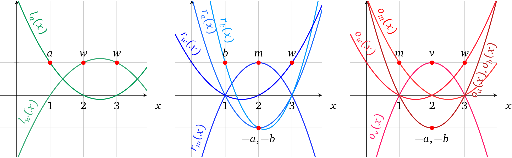
我们准备通过多项式去证明计算，首先，选择函数的输入值，例如： w = 1, a = 3, b= 2。其次，计算过程中的中间变量值为：
m=a × b =6
v = w(m-a-b)+a+b=6
然后，我们把所有计算结果中的值赋值到 变量多项式 中，然后相加得到操作数或者输出多项式的形式：
$\textcolor{green}{L(x)}=\textcolor{green}{3 \cdot l_a(x) +1 \cdot l_w(x)} = x^2 -5x+7$
$\textcolor{blue}{R(x)}=\textcolor{blue}{6 \cdot r_m(x) + 3 \cdot r_a(x) + 2 \cdot r_b(x) + 1 \cdot r_w(x)} = \frac{1}{2}x^2 -2 \frac{1}{2}x +4$
$\textcolor{red}{O(x)}=\textcolor{red}{6 \cdot o_m(x) + 6 \cdot o_v(x) + 3 \cdot o_a(x)+ 2 \cdot o_b(x) + 1 \cdot o_w(x)}= 2 \frac{1}{2}x^2 + 12 \frac{1}{2}x +16$
在图中就表示为：
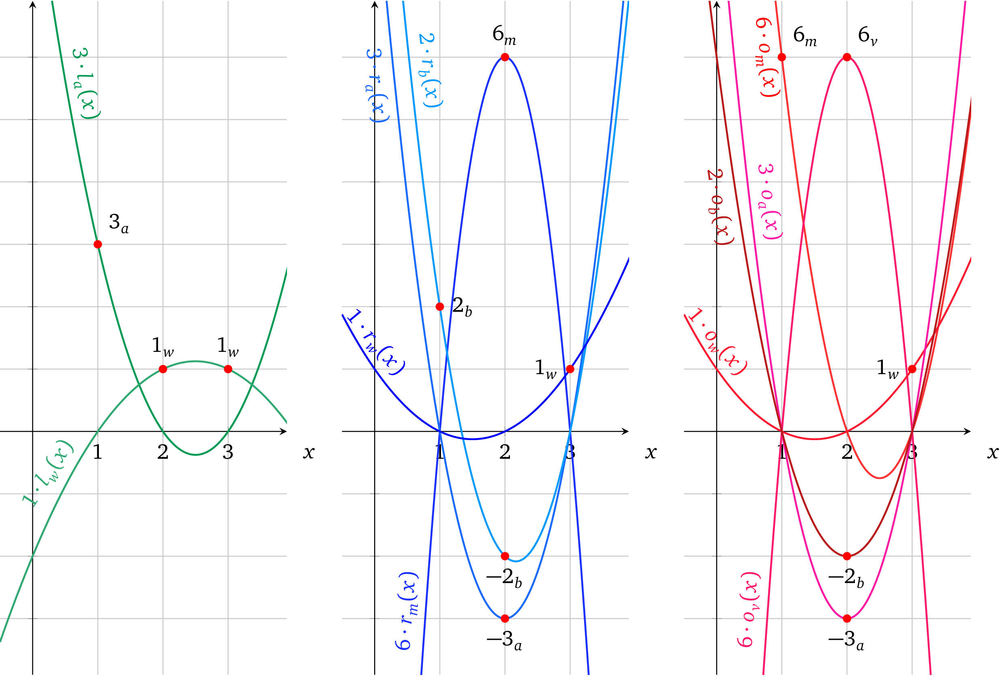
把他们相加成对应运算中的操作数和输出值：
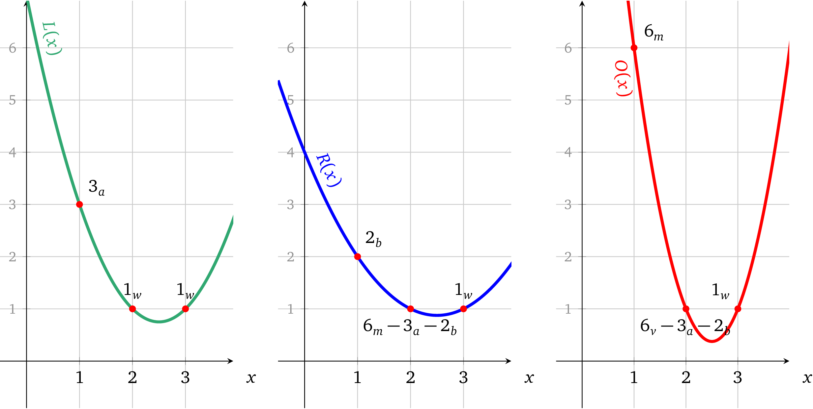
我们需要去证明 L(x) × R(x) – O(x) = t(x)h(x)，因而我们先找出 h(x)：
$h(x) = \frac{L(x) \times R(x) - O(x)}{t(x)} = \frac{\frac{1}{2}x^4 - 5x^3 + \frac{35}{2}x^2 -25x +12}{(x-1)(x-2)(x-3)} = \frac{1}{2}x - 2$
以图的形式表示为：
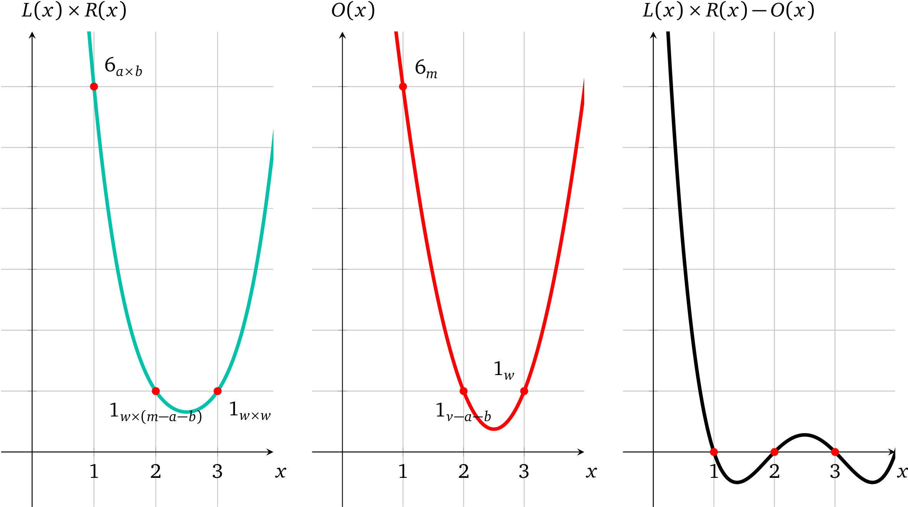
这里很明显多项式 L(x) × R(x) – O(x) 的解为 x= 1， x= 2 和 x= 3，因而 t(x) 是它的因式，假如使用了和它不一致的变量值，情况就不是这样了。
这就是一组能够正确计算的变量值，如何在多项式层面上证明出来的。下面 prover 还要再继续处理协议的密码学部分。
可验证计算协议
我们基于前文中多项式知识协议 做了很多重要的修改使它变得更通用，我们再来看一下它现在的定义。假定函数 f(*) 是要证明的问题中的计算结果，其中操作数的数量为 d ，变量的数量 n ，以及它们对应的系数为：
${c_{L,i,j},c_{R,i,j},c_{o,i,j}}_{i \in {1,…,d}, j \in {i,…,d}}$
-
Setup
-
为左操作数 ${l_i(x)}{i \in {1,…,n}}$ 构造变量多项式 然后对于所有 $j \in {1,…,d}$ 的运算都算出其对应的系数，即 $l_i(j) = c{L,i,j}$，对右操作数和输出也做同样的事情。
-
随机抽取 s，$α$
-
计算 t(x)= (x-1)(x-2)…(x-d) 及其结果 $g^{t(s)}$
-
计算 proving key：
$({g^{s^k}}{k \in[d]},{g^{l_i(s)}, g^{r_i(s)}, g^{o_i(s)},g^{αl_i(s)},g^{αr_i(s)},g^{αo_i(s)}}{i \in {1,……,n}})$
-
计算 verification key：
$(g^{t(s)},g^α)$
-
-
Proving
-
计算函数 f(*) 以此计算相应的变量 ${v_i}_{i \in {1,…,n}}$
-
计算 $h(x) = \frac{L(x) \times R(x) - O(x)}{t(x)}$，其中 $L(x) = \sum_{i=1}^n {v_i \cdot l_i(x)}$，$R(x)$, $O(x)$ 与之相似
-
给变量赋值并对操作数多项式求和：
$g^{L(s)} = (g^{l_1(s)})^{v_1}…(g^{l_n(s)})^{v_n},g^{R(s)} = \prod_{i=1}^n{(g^{r_i(s)})^{v_i}}, g^{O(s)} = \prod_{i=1}^n{(g^{o_i(s)})^{v_i}}$
-
对变换后的多项式赋值：
$g^{αL(s)} = \prod_{i=1}^n{(g^{αl_i(s)})^{v_i}},g^{αR(s)} = \prod_{i=1}^n{(g^{αr_i(s)})^{v_i}}, g^{αO(s)} = \prod_{i=1}^n{(g^{αo_i(s)})^{v_i}}$
-
使用 s 的幂加密值：${g^{s^k}}_{k \in [d]}$ 计算加密值 $g^{h(s)}$
-
生成证明：${g^{L(s)},g^{R(s)},g^{O(s)},g^{αL(s)},g^{αR(s)},g^{αO(s)},g^{h(s)}}$
-
-
Verification
-
解析证明为 ${g^L,g^R,g^O,g^{L'},g^{R'},g^{O'},g^{h}}$
-
检查可变多项式约束：
$e(g^L,g^α) = e(g^{L'},g), e(g^R,g^α) = e(g^{R'},g), e(g^O,g^α)=e(g^{O'},g)$
-
验证计算有效性：
$e(g^L,g^R) = e(g^t,g^h) \cdot e(g^O,g)$
-
注意：使用符号 ∏ 来表示多个元素连乘，即： $\prod_{i=1}^n{v_i} = v_1 \cdot v_2 \cdot … \cdot v_n$
对于 i ∈ {1, …, n} 所有变量多项式 {lᵢ(x), rᵢ(x), oᵢ(x)} 和目标多项式 t(x) 的设置被称为一个二元算术程序 (QAP，在[Gen+12] 中有介绍)。
虽然协议足够健壮，可以进行常规的计算验证，但这里依然还有两个安全考虑需要去解决。
操作数和输出的不可替代性
因为在 变量多项式约束检查 中的所有操作数上我们使用了同一个 α，所以就没有办法阻止 prover 做下面的欺骗行为：
- 使用其它的操作数中的可变多项式，即 L′(s) = o₁(s) + r₁(s) + r₁(s) + …
- 完全交换 操作数多项式， 也就是把 O(s) 和 L(s) 换成 O(s) × R(s) = L(s)
- 复用相同的操作数多项式，即 L(s) × L(s) = O(s)
可交换性就是指 prover 可以修改计算过程，并有效证明一些其它无关的计算结果。防止这种行为的一个很显然的方式就是在不同的操作数上使用不同的 αs ，具体协议就可以修改为：
-
Setup
…
- 选择随机数 $α_l$，$α_r$，$α_o$ 来代替 $α$
- 计算其对应的“变换” ${g^{α_ll_i(s)},g^{α_rr_i(s)},g^{α_oo_i(s)}}_{i \in {1…n}}$
- proving key：$({g^{s^k}}{k \in [d]},{g^{l_i(s)}, g^{r_i(s)}, g^{o_i(s)}, g^{α_ll_i(s)}, g^{α_rr_i(s)}, g^{α_oo_i(s)}}{i \in {i…n}})$
- verfication key：$(g^{t(s)},g^{α_l},g^{α_r},g^{α_o})$
-
Proving
…
- 为 “变换”的多项式赋值：$g^{α_lL(s)} = \prod_{i=1}^n{(g^{α_ll_i(s)})^{v_i}}, g^{α_lR(s)} = \prod_{i=1}^n{(g^{α_rr_i(s)})^{v_i}}, g^{α_oO(s)} = \prod_{i=1}^n{(g^{α_oo_i(s)})^{v_i}}$
- 设置证明：$(g^{L(s)},g^{R(s)},g^{O(s)},g^{α_lL(s)},g^{α_rR(s)},g^{α_oO(s)},g^{h(s)})$
-
Verification
…
- 可变多项式约束验证：$e(g^L,g^{α_l}) = e(g^{L'},g),e(g^R,g^{α_r}) = e(g^{R'},g),e(g^O,g^{α_o}) = e(g^{O'},g)$
这样就不能在一个操作数中使用其它操作数的变量多项式了，因为 prover 没有办法去获知 $α_l, α_r, α_o$ 来满足 $α_s$ 变换关系。
even@安比实验室: 这里通过对l(x),r(x)和o(x) 进行分开 KEA 检查，就解决了上篇文章中提出的第二个缺陷问题——由于 prover 生成的证明中只有计算结果，左操作数，右操作数，输出在计算中混用也不会被发现。
同样下面一节也解决了上篇文章中提出的第三个缺陷问题——由于左操作数，右操作数，输出是分开表示的，互相之间的关系无法进行约束。
跨操作数的变量一致性
对于任意的变量 vᵢ ，我们都必须将它的值 分配 到每个相应操作数中的一个与之对应的变量多项式 上，即：
$(g^{l_i(s)})^{v_i}, (g^{r_i(s)})^{v_i},(g^{o_i(s)})^{v_i}$
因为每一个操作数运算符 的有效性是分开校验的，并不强制要求我们在对应的变量多项式 中使用相同的变量值。这就意味着在左操作数中变量 v₁ 的值可以与右操作数或输出中的变量值 v₁不同。
我们可以通过熟悉的限制多项式的方法（也就是限制变量多项式的方法）在操作数之间强制变量值相等。如果我们能够在所有的操作数之间创造一个作为“变换的校验和”的变量多项式，那么就可以限制 prover 使其只能够赋予相同的值。verifier 可以将这些每个变量的多项式加起来，即：
$g^{l_i(s)+r_i(s)+o_i(s)}$
然后乘以一个额外的随机数 β，即
$g^{β(l_i(s)+r_i(s)+o_i(s))}$
提供这些变换后的多项式给 prover，与变量多项式一起给它赋上变量值：
$(g^{l_i(s)})^{v_{L,i}},(g^{r_i(s)})^{v_{R,i}}, (g^{o_i(s)})^{v_{O,i}}, (g^{β(l_i(s)+r_i(s)+o_i(s))})^{v_{β,i}}$
然后加密 β 并把 $g^β$ 加到 verification key 中。现在如果所有的 vᵢ 值相同，即,
$v_{L,i} = v_{R,i} = v_{o,i} = v_{β,i} \quad 其中 i \in {1,…,n}$
等式就满足：
$e(g^{v_{L,i} \cdot l_i(s)} \cdot g^{v_{R,i} \cdot r_i(s)} \cdot g^{v_{o,i} \cdot o_i(s)},g^β)=e(g^{v_{β,i} \cdot β(l_i(s)+r_i(s)+o_i(s))},g)$
尽管这个一致性校验很有用，但还是存在一定的概率 l(s), r(s), o(s) 中至少有两项要么计算值相同要么一个多项式可以被另一个整除等情况，这就允许 prover 去分解 $v_{L,i},v_{R,i},v_{O,i},v_{β,i}$ 这些值的关系，使得即使有至少两个不相等的值也依然能够保持等式成立，从而使校验无效：
$(v_{L,i} \cdot l_i(s) + v_{R,i} \cdot r_i(s) + v_{O,i} \cdot o_i(s)) \cdot β = v_{β,i} \cdot β \cdot (l_i(s) + r_i(s) + o_i(s))$
例如，一个以 l(x) = r(x) 为例的单个运算。我们用 w 来表示这两个值同时 y = o(s)。这个等式看起来就是：
$β(v_Lw + v_Rw+v_Oy) = v_β \cdot β(w+w+y)$
对于任意的 $v_R$ 和 $v_O$，这种形式可以令 $v_β = v_o$，$v_L = 2v_o -v_R$，也就变换成：
$β(2v_ow - v_Rw + v_Rw + v_oy) = v_o \cdot β(2w+y)$
因而这样一个一致性策略是无效的。缓解这种情况的一种方法是对每个操作数都使用不同的 β，确保操作数的变量多项式 中包含无法预测的值。以下就是修改后的协议：
-
Setup
-
… 随机数 $β_l$， $β_r$， $β_o$
-
对变量一致性多项式 进行计算，加密并添加到 proving key中：
${g^{β_ll_i(s)+ β_rr_i(s)+ β_oo_i(s)}}_{i \in {1,…,n}}$
-
对 $β_s$ 加密并将其加到 verification key 中：$(g^{β_l},g^{β_r},g^{β_o})$
-
-
Proving
-
…将变量值赋给变量一致性多项式：
$g^{z_i(s)} = (g^{β_ll_i(s)+ β_rr_i(s)+ β_oo_i(s)})^{v_i} \quad for \quad i \in {1,…,n}$
-
增加分配的多项式到加密空间中:
$g^{Z(s)} = \prod_{i=1}^n{g^{z_i(s)}} = g^{β_lL(s) + β_rR(s)+ β_oO(s)}$
-
再在证明中加入：$g^{Z(s)}$
-
-
Verification
-
…校验提供的操作数多项式 和 “校验和”多项式之间的一致性：
$e(g^L,g^{β_l}) \cdot e(g^R,g^{β_r}) \cdot e(g^O,g^{β_o}) = e(g^Z,g)$
这相当于：
$e(g,g)^{β_lL + β_rR + β_oO} =e(g,g)^Z$
-
这个构造中同一个变量值就无法乱用了，因为不同的 βs 使得相同多项式无法兼容，但是这里还存在与 remark 4.1 相同的缺陷，由于gβl ，gβr ， *gβo *是公开可见的，攻击者可以修改任意变量多项式的零索引系数，因为它并不依赖于 s，即，gβls0= gβl。
even@安比实验室: 回忆一下，上文中我们提出了在 setup 阶段设置数学表达式的约束关系来解决了一些问题，但这里似乎有引入了一个问题：如果保证 prover 构造的证明是用遵循这些约束关系计算出来的呢？
KEA 其实已经解决了这个问题，但似乎并不完美，这就是我们下面要讨论的变量延展性问题。
变量非延展性和变量一致性多项式
变量多项式的延展性
举一个 remark 4.1 有关的例子，看一下下面的两个运算：
$\textcolor{green}{a} \times \textcolor{blue}{1} = \textcolor{red}{b}$
$\textcolor{green}{3a} \times \textcolor{blue}{1} =\textcolor{red}{c}$
预期的结果 b = a 和 c = 3a , 再进一步就是 c = 3b。这就是说左操作数的变量 多项式的计算结果为 la(1) = 1 和 la(2) = 3。先不管 la(x) 的形式， prover 都可以不按照上述的比例用另一个修改了的多项式 lₐ′(x) = ala(x) + 1 来给 a 赋值。这样运算就变成了 la′(1) = a+ 1 和 la′(2) = 3a+ 1, 结果也就是 b = a + 1 和 c = 3a + 1，其中 c≠3b，这意味着 a 的取值的实际意义在不同运算中是不一样的。
但是因为 prover 已经拿到了 gαl 和 gβl ，所以他依然能够通过正确的操作符多项式* 和变量值一致性 的校验：
-
…Proving：
-
用分配不成比例的变量 a 来建立左操作数多项式： $L(x) = a \cdot l_a(x) +1$
-
按照常规的方式构造右操作数多项式和输出多项式： $R(x) = r_1(x), O(x)=b \cdot o_b(x) + c \cdot o_c(x)$
-
计算除数：$h(x) = \frac{L(x) \cdot R(x) - O(x)}{t(x)}$
-
计算加密值：$g^{L(s)} = (g^{l_a(s)})^a \cdot g^1$，并按照常规方式计算 $g^{R(s)},g^{O(s)}$
-
计算 α-变换的加密值：$g^{αL(s)} = (g^{αl_a(s)})^a \cdot g^α$，并按照常规方式计算 $g^{αR(s)},g^{αO(s)}$
-
计算变量一致性多项式：
$g^{Z(s)} = \prod_{i \in {1,a,b,c}}{(g^{β_ll_i(s)+β_rr_i(s)+β_oO_i(s)})^i \cdot g^{β_l}} = g^{β_l(L(s)+1)+ β_rR(s) +β_oO(s)}$，其中下标 i 代表对应变量的符号；指数 i 代表变量的值；以及未定义的变量多项式的值为 0。
-
设置证明：$(g^{L(s)},g^{R(s)},g^{O(s)},g^{α_lL(s)},g^{α_rR(s)},g^{α_oO(s)},g^{Z(s)},g^{h(s)})$
-
-
Verification：
-
变量多项式约束检查：
$e(g^L,g^{β_l}) \cdot e(g^R, g^{β_r}) \cdot e(g^O,g^{β_o}) = e(g^Z,g) => e(g,g)^{(a \cdot l_a +1)β_l +Rβ_r + Oβ_o} = e(g,g)^{β_l(L+1)+ β_rR +β_oO}$
-
有效计算检查：$e(g^L,g^R) = e(g^t,g^h) \cdot e(g^O,g)$
-
变量一致性多项式的延展性
而且 gβl，gβr，gβo的存在允许我们在不同操作数的相同变量上使用不同的值。例如，如果我们有一个运算：
$a \times a = b$
可以用多项式表示：
$l_a(x) = x, r_a(x) = x, o_a(x) = 0$
$l_b(x) = 0, r_b(x) = 0, o_b(x) = x$
尽管我们期待的输出是 b= a²，但我们可以设置不同的 a 值，例如：设置 a= 2 （左操作数中）, a= 5 （右操作数中）如下：
-
Proving：
-
…用 a=2 设置左操作数多项式：$L(x) = 2l_a(x) + 10L_b(x)$
-
用 a=5 设置右操作数多项式：$R(x) = 2r_a(x) + 3 + 10r_b(x)$
-
用 b=10 设置输出多项式：$O(x) = 2o_a(x) +10o_b(x)$
-
…计算加密值：
$g^{L(s)} = (g^{l_a(s)})^2 \cdot (g^{l_b(s)})^{10} = g^{2l_a(s)+10l_b(s)}$
$g^{R(s)} = (g^{r_a(s)})^2 \cdot (g)^3 \cdot (g^{r_b(s)})^{10} = g^{2r_a(s)+3+10r_b(s)}$
$g^{O(s)} = (g^{O_a(s)})^2 \cdot (g^{O_b(s)})^{10} = g^{2o_a(s)+10o_b(s)}$
-
计算变量一致性多项式：
$g^{Z(s)} = (g^{β_ll_a(s)+β_rr_a(s)+β_oo_a(s)})^2 \cdot (g^{β_r})^3 \cdot (g^{β_ll_b(s)+ β_rr_b(s)+ β_oo_b(s)})^{10} $
$= g^{β_l(2l_a(s)+10l_b(s))+ β_r(2r_a(s)+3+10r_b(s)) + β_o(2o_a(s)+3+10o_b(s))}$
-
-
Verification：
-
……变量值的一致性检查，应满足：
$e(g^L,g^{β_l}) \cdot e(g^R, g^{β_r}) \cdot e(g^O,g^{β_o}) = e(g^Z,g)$
-
注意：多项式 oa(x)，lb(x)，rb(x) 其实可以被忽略掉的，因为这几项对于任何 x 的取值，计算结果都为 0，但是为了保持完整性我们依然要保留这几项。
even@安比实验室：这种能力会危害到协议的可靠性。很显然，加密的 βs不应该对 Prover 可见。
非延展性
解决延展性问题的一个方法就是，在 setup 阶段将 verification key 中加密的 βs 项与随机秘密值 γ(gamma) 相乘使其与加密值 Z(s) 不兼容：
$g^{β_l \gamma}, g^{β_r\gamma}, g^{β_o\gamma}$
相应的这种被修饰过的加密值，就能阻止使得修改加密值 Z(s) 变得不可行了，因为 Z(s) 中没有 γ，即：
$g^{Z(s)} \cdot g^{v' \cdot β_l r} = g^{β_l(L(s)+v'r)+β_rR(s) + β_oO(s)}$
因为变值 γ 是随机的 prover 并不知道它的值。所以这个修改就需要我们用 Z(s) 乘以 γ 来平衡协议中的变量值一致性校验* 等式：
-
Setup：
- …随机数 $β_l$，$β_r$，$β_o$，$γ$
- …设置 verification key：$(…, g^{β_l \gamma}, g^{β_r\gamma}, g^{β_o\gamma}, g^{\gamma})$
-
Proving：…
-
Verification：
-
…变量值一致性检查应满足：
$e(g^L,g^{β_l\gamma}) \cdot e(g^R,g^{β_r\gamma}) \cdot e(g^O,g^{β_o\gamma}) = e(g^Z, g^{\gamma})$
-
这里很重要的一点是我们排除了变量多项式为 0-阶的例子（即， l₁(x) = 1x⁰），否则就可以从 proving key 的变量一致性多项式 中揭露出加了密的 β 值
${g^{β_ll_i(s) +β_rr_i(s) + β_oo_i(s)}}_{i \in {1,…,n}}$
这个例子中当操作数/输出中的任意两项为 0 时，即，对于 l₁(x) = 1, r₁(s) = 0, o₁(s) = 0 的例子，结果就是
$g^{β_ll_1(s) +β_rr_1(s) +β_oo_1(s)} = g^{β_l}$
我们同样也可以通过修饰 αs 项来解决变量多项式 的延展性问题。但是这就没有必要了，因为对于变量多项式 的任何修改，都需要被映射到变量的一致性多项式 中，而一致性多项式是无法修改的。
变量值一致性检查的优化
现在变量值一致性 检查是有效的，但是这里在 verification key 中增加了 4 个昂贵的配对操作和 4 个新的项。文献 [Par+13] 中的 Pinocchio 协议用了一个很聪明的方法优化，通过选择不同的生成元 g ，从而对每个操作数实行“移位”：
-
Setup
- …选择随机值 $β，γ，\rho_l,\rho_r$ 并设置 $\rho_o = \rho_l \cdot \rho_r$
- 设置生成元 $g_l=g^{\rho_l}, g_r=g^{\rho_r},g_o=g^{\rho_o}$
- 设置 proving key：$({g^{s^k}}{k \in [d]},{g_l^{l_i(s)}, g_r^{r_i(s)}, g_o^{o_i(s)}, g_l^{α_ll_i(s)}, g_r^{α_rr_i(s)}, g_o^{α_oo_i(s)}, g_l^{βl_i(s)}, g_r^{βr_i(s)}, g_o^{βo_i(s)}}{i \in [n]})$
- 设置 verification key：$(g_o^{t(s)},g^{α_l},g^{α_r},g^{α_o},g^{βγ}，g^γ)$
-
Proving
-
…分配变量值
$g^{Z(s)} = \prod_{i=1}^n{(g_l^{βl_i(s)} \cdot g_r^{βr_i(s)} \cdot g_o^{βo_i(s)})^{v_i}}$
-
-
Verification
-
…变量多项式约束检查：
$e(g_l^{L'},g) = e(g_l^L,g^{α_l})$，对 $g_r^{R},g_o^{O}$ 做同样的检查
-
变量值约束检查：
$e(g_l^L \cdot g_r^R \cdot g_o^O , g^{βγ}) = e(g^Z,g^γ)$
-
有效运算检查：
$e(g_l^L , g_r^R) = e(g_o^t,g^h)e(g_o^O,g) => e(g,g)^{\rho_l\rho_rLR} = e(g,g)^{\rho_l\rho_rth+\rho_l\rho_rO}$
-
生成元的这种随机化进一步增加了安全性，使得如 remark 4.1中描述的可变多项式 延展性无效。因为对于故意的修改，它必须要么是ρl, ρr 或者ρo 原始值的倍数要么就是不可直接用的加密值的倍数（假定,如上文所述我们不去处理可能曝光加密后的值的 0 阶可变多项式）。
这个优化使得 verification key 减少了两个项，并且去除了 verification 步骤中的两个配对运算。
注意：在 Jens Groth 2016年的 paper [Gro16] 中有更进一步的改进。
even@安比实验室:至此，通用 zk-SNARK 协议的已经几乎构造完成了，本文可以归纳为以下几点：
协议中是如何增加可变系数的和如何做加减乘除运算的
协议如何保证操作数和输出的不可替代性
协议如何保证跨操作数的可变一致性
协议如何处理非延展性变量和变量一致性
协议中变量值一致性检查优化
参考文献
[Par+13] — Bryan Parno, Craig Gentry, Jon Howell, and Mariana Raykova. Pinocchio: Nearly Practical Verifiable Computation. Cryptology ePrint Archive, Report 2013/279. https://eprint.iacr.org/2013/279. 2013.
[Gen+12] — Rosario Gennaro, Craig Gentry, Bryan Parno, and Mariana Raykova. Quadratic Span Programs and Succinct NIZKs without PCPs. Cryptology ePrint Archive, Report 2012/215. https://eprint.iacr.org/2012/215. 2012.
[Gro16] — Jens Groth. On the Size of Pairing-based Non-interactive Arguments. Cryptology ePrint Archive, Report 2016/260. https://eprint.iacr.org/2016/260. 2016.
从零开始学习 zk-SNARK（五）——Pinocchio 协议
约束和公共输入
约束
我们的分析主要集中在运算的概念上。但是，协议实际上不是去做”计算“，而是检验输出值是否是操作数正确运算得到的结果。所以我们称之为约束，即一个 verifier 约束 prover 去为预定义的“程序”提供有效值，而无论这个“程序”是什么。多个约束组成的系统被称为“约束系统”（在我们的例子中这是一个一阶约束系统，或被称为R1CS）。
@Maksym（作者）：这里其实隐含了寻找所有正确答案的一个方法就是对所有可能的组合值进行一次暴力破解，然后只选择一个满足的约束，或者使用可满足约束的更精密的技术[con18]。
even@安比实验室：请注意这个约束是定义在算术电路，或者布尔电路上。因为这两类电路的可满足性问题是 NP-Complete 问题。
因而我们也可以使用约束来确保其它的关系。例如，如果我们想要确认变量 a 的值只能为 0 或 1（即二进制数），我们可以用一个简单的约束去做这件事：
$\textcolor{green}{a} \times \textcolor{blue}{a} = \textcolor{red}{a}$
我们也可以约束 a 的值只能为 2：
$\textcolor{green}{(a-2)} \times \textcolor{blue}{1} = \textcolor{red}{0}$
一个更复杂的例子是确保数字 a 是一个 4-bit 的数字（也称为半字节），换句话说可以用 4个bit 来表示出 a。我们也可以称这个为“确保取值范围” 因为一个 4-bit 的数字可以代表 24 的组合，因而也就是从 0 到15 范围内的 16 个数字。在十进制数字系统中任何数字都可以表示为以 10为底 （也就是我们手指头的数量）并根据对应的指数求幂后的值的和，例如： 123 = 1 ⋅ 102 + 2 ⋅ 101 + 3 ⋅ 100。同样的一个二进制数可以表示为以 2 为底在对应系数上的求幂值的和，例如，1011 (二进制) = 1 ⋅ 23 + 0 ⋅ 22 + 1 ⋅ 21 + 1 ⋅ 20 = 11 (十进制)。
因而如果 a 是一个 4-bit 的数，那么 *a= b3⋅23 + b2 ⋅ 22 + b1⋅ 21 + b0 ⋅ 20 ，其中 b3, b2, b1, b0 为布尔值。约束就可以表示为下面的形式：
$1: \qquad \textcolor{green}{a} \times \textcolor{blue}{1} = \textcolor{red}{8 \cdot b_3 +4 \cdot b_2 + 2 \cdot b_1 + 1 \cdot b_0} $
并且为了确保 b3, b2, b1, b0 都是二进制数我们需要增加约束：
$2: \qquad \textcolor{green}{b_0} \times \textcolor{blue}{b_0} = \textcolor{red}{b_0}$
$3: \qquad \textcolor{green}{b_1} \times \textcolor{blue}{b_1} = \textcolor{red}{b_1}$
$4: \qquad \textcolor{green}{b_2} \times \textcolor{blue}{b_2} = \textcolor{red}{b_2}$
$5: \qquad \textcolor{green}{b_3} \times \textcolor{blue}{b_3} = \textcolor{red}{b_3}$
更复杂的约束也可以用这种方式表示，以此来确保使用的值满足规则。注意很重要的一点是在当前的计算结构中是不能对 1 进行约束的：
$\textcolor{green}{\Sigma_{i=1}^n{c_{l,i} \cdot v_i }} \times \textcolor{blue}{\Sigma_{i=1}^n{c_{r,i} \cdot v_i}} = \textcolor{red}{\Sigma_{i=1}^n{c_{o,i} \cdot v_i }}$
因为值 1 （以及前面约束中的 2）必须通过 c·vone 表达出来，其中 c 可以被固定到 proving key 中，但是因为 v 是由 prover 提供的，所以可以是任何别的值。尽管我们可以通过设置 c=0 来强制 c·vone 变成 0，但是在我们前面受限的构造方法中很难找到一个约束来强制 vone 为 1。于是，Verifier 需要有一种办法来设置 vone 的值。
even@安比实验室: 我们前文中提到的表达式的约束关系就称为 R1CS。
公共输入和 1
如果不能根据 verifier 的输入对其进行检查，那么证明的可用性将受到限制。也就是说，虽然知道 prover 将两个值相乘但是并不知道这些值和/或计算结果。尽管有可能在 proving key 中通过“硬编码”来进行验证一些特定的值（如，乘法运算的结果必须为12），但这就需要针对每一个想要的“verifier 的输入”生成单独的密钥对。
even@安比实验室: 这样会严重限制实用性，电路需要支持参数。
因而如果可以由 verifier 而不是 prover 为计算指定一些值（输入或者输出），包括 $v_{one}$，那证明就可以变得更通用了。
首先，我们看一下要证明的值 gL(s)，gR(s)，gO(s)。因为这里使用了同态加密所以可以增大这些值，例如，我们可以与另一个加密的多项式相加使得值为gL(s) · glv(s) =gL(s)+lv(s) 。
这样如果我们能够在提供给 prover 的变量多项式中排除必要的一项，verifier 就可以在这一项变量多项式上设置他自己的值，并且使得检查依然能够通过。
因为 verifier 已经可以通过加入α-转换来限制 prover 选择多项式了，所以这个检查结果就很容易得到。因而当消除了它的 αs 和 β 校验和对应的项，这些可变多项式就可以从 proving key 转移到 verification key 当中去了。
必要的协议更新为：
-
Setup
-
…将 n 个可变多项式全部分为两组：
-
verifier 的 m+1 项：$L_v(x) = l_0(x) + l_1(x) +…+l_m(x)$,对 $R_v(x)$ 和 $O_v(x)$ 也做同样的计算。这里对于索引0 保留值 $v_{one} =1$
-
prover 的 n-m 项：
$L_p(x) = l_{m+1}(x) +…+l_n(x)$，对 $R_p(x)$ 和 $O_p(x)$ 也做同样的计算。
-
-
设置 proving key：$({g^{s^k}}{k \in [d]},{g_l^{l_i(s)},g_r^{r_i(s)},g_o^{o_i(s)},g_l^{α_ll_i(s)},g_r^{α_rr_i(s)},g_o^{α_oo_i(s)},g_l^{βl_i(s)},g_r^{βr_i(s)},g_o^{βo_i(s)}}{i \in {m+1,…,n}})$
-
添加到 verification key：$(……，{g_l^{l_i(s)}, g_r^{r_i(s)}, g_o^{o_i(s)}}_{i \in {0,…,m}})$
-
-
Proving
-
…为 verifier 的多项式计算 h(x)：$h(x) = \frac{L(x) \cdot R(x) -O(x)}{t(x)}$，其中 $L(x) = L_v(x) + L_p(x)$，$R(x)$ ，$O(x)$ 也通过同样的计算获得。
-
提供证明：
$(g_l^{L_p(s)},g_r^{R_p(s)},g_o^{O_p(s)},g_l^{α_lL_p(s)},g_r^{α_rR_p(s)},g_o^{α_oO_p(s)},g^{Z(s)},g^{h(s)})$
-
-
Verification
-
为 verifier 的变量多项式赋值，并加 1：
$g_l^{L_v(s)} = g_l^{l_0(s)} \cdot \prod_{i=1}^m{(g_l^{l_i(s)})^{v_i}}$，对 $g_r^{R_v(s)}$ 和 $g_o^{O_v(s)}$ 做同样的计算
-
变量多项式约束检查：
$e(g_l^{L_p},g^{α_l}) = e(g_l^{L'_p},g)$，对 $g_r^{R_p}$ 和 $g_o^{O_p}$ 做同样的计算
-
变量值一致性检查：
$e(g_l^{L_p}g_r^{R_p}g_o^{O_p},h^{βγ}) = e(g^Z,g^γ)$
-
有效计算检查：
$e(g_l^{L_v(s)}g_l^{L_p},g_r^{R_v(s)}g_r^{R_p}) =e(g_o^t,g^h)e(g_o^{O_v(s)}g_o^{O_p},g)$
-
注意：根据协议（单个变量操作数多项式 的章节）的性质，由多项式 l0(x),r0(x),o0(x) 表示的值 1 已在相应的运算中具备了合适的值，因此不需要再赋值了。
注意：verifier 将不得不在验证步骤中做额外的工作，使得赋值的变量成比例。
这实际上是把一些变量从 prover 手中拿到 verifier 的手中，并同时保持等式相等。 因而只有当 prover 和 verifier 的输入中使用相同值的时候， 有效计算检查才依然成立。
1 这个值相当重要，它能够通过与任意一个常数项相乘来生成这个值（从选择的有限域上），例如，用 123 去乘以 a：
$\textcolor{green}{1 \cdot a} \times \textcolor{blue}{123 \cdot v_{one}} = \textcolor{red}{1 \cdot r}$
even@安比实验室: 这里将原本由 prover 赋值的一些变量改为由拿到 verifier 赋值，使得prover 不得不与 verifier 保持相同的输入。这不仅解决了 Verifier 参数输入的问题，也间接解决了常数赋值的问题。
零知识计算
计算的零知识证明
自从引入通用计算协议（计算的证明这一章节），我们一直放弃了零知识 的性质，这是为了让协议的改进变得更简单。至此，我们已经构建了可验证的计算协议。
以前我们使用随机数δ-转换来构造多项式的“零知识” 证明，这种方法能够使得证明与随机数无法区分（零知识这一章节）：
$$\delta p(s ) = t(s) \cdot \delta h(s) $$
通过计算我们证明了：
$$L(s) \cdot R(s) - O(s)= p(s)h(s)$$
尽管我们可以通过用相同 δ 乘以多项式的方法来调整解决方案，即提供随机值 δL(s)， δR(s)， δ²O(s)， δ²h(s)，这依然能够通过有效计算检查 来满足配对验证：
$e(g,g)^{\delta^2L(s)R(s)}=e(g,g)^{\delta^2(t(s)h(s)+O(s))}$
但是问题是使用相同的 δ 会妨碍安全性，因为我们在证明中分别用了以下这些值：
-
其他人可以很容易得辨认出两个不同的多项式值是否相同，以此来获取一些知识，即：gδL(s)=gδR(s)
-
L(s) 和 R(s) 的不同值之间潜在的微小关系可能会通过暴力破解来区分开来，例如如果 L(s) = 5R(s)，就可以对 i ∈ {1…N} 取值反复校验 gL(s)=(gR(s))i ，只需要执行 5 步就可以揭示出两者 5 倍区别的关系。同样的暴力破解也可以用在破解加密值的加法运算上，如：gL(s) = gR(s)+5
-
证明元素之间的其它关系也可能会被发现，例如，如果 e(gδL(s),gδR(s)) = e(gδ2O(s),g)，那么也就表示 L(x) ⋅ R(x) = O(x)。
注意：一致性检查优化 使得挖掘数据关系变得更加困难了，但是依然能够发现一些关系 ，且不说 verifier 可以选择特定 ρl， ρr 来为揭示知识提供便利（只要这不是一个多样化的 setup）。
最终，我们需要对每一个多项式的值使用不同的随机数 (δs) ，例如：
δlL(s) ·δrR(s) - δoO(s) =t(s)·(△?⃝ h(s))
为了解决等式右边不相等的问题，我们不必改变协议，只要修改证明的值 *h(s)*即可。 这里 Delta (Δ) 代表为了平衡方程另一侧的随机性而对 h(s) 做的处理，?⃝代表乘法运算或者加法运算（这个反过来也适应了除法和减法）。如果我们选择用乘法 (?⃝ = ×) 来计算 Δ ，也就意味着不太可能有较大的概率可以找到一个 Δ ，因为存在随机性：
$\Delta = \frac{\delta_lL(s) \cdot \delta_rR(s) - \delta_oO(s)}{t(s)h(s)}$
设置 $\delta_o = \delta_l \cdot \delta_r$，于是就变成了：
$\Delta = \frac{\delta_l \delta_r(L(s) \cdot R(s) - O(s))}{t(s)h(s)} = \delta_l \delta_r$
但是如前文所述，这个妨碍了零知识的性质，更重要的是这个结构也不再适合 verifier 的输入多项式，因为它们必须是 *δs*相应的倍数，这就需要额外的交互了。
我们可以尝试把随机数加到变量上：(L(s)+δl) ·(R(s)+δr) - (O(s)+δo) = t(s) ·(△ × h(s))
$$\Delta = \frac{\overbrace{L(s)R(s)-O(s)}^{t(s)h(x)} + \delta_rL(s) + \delta_lR(s) + \delta_l \delta_r - \delta_o}{t(s)h(s)} = 1+ \frac{\delta_rL(s) + \delta_lR(s) + \delta_l \delta_r -\delta_o}{t(s)h(s)}$$
但是随机数是不可除尽的。尽管我们可以用 t(s)h(s) 去乘以每一个 δ ，但由于我们已经用了 $\Delta$ 乘以 h(s) ， $\Delta$ 是组成加密结果的一部分（即E(L(s))等），因此在没有使用配对（它的结果在另一个数值空间内）的情况下是不能计算出g△h(s) 的。同样也不能使用 s 的幂（从 1 到 d）的加密值对 Δh(x) 的进行加密计算，Δh(x) 的阶将达到 2d。并且，基于上述同样的原因也无法计算这个随机操作数多项式的值：gL(s)+δlt(s)h(s)。
于是我们应该用加法(?⃝ = +)来使用 $\Delta$，因为它可以同态地计算。
$(L(s)+ \delta_l) \cdot (R(s) +\delta_r) - (O(s) + \delta_o) = t(s) \cdot (\Delta + h(s))$
$\Delta = \frac{L(s)R(s)-O(s)+\delta_rL(s) + \delta_lR(s) + \delta_l \delta_r - \delta_o - t(s)h(s)}{t(s)} =>$
$\Delta = \frac{\delta_rL(s)+ \delta_lR(s) + \delta_l \delta_r -\delta_o}{t(s)}$
分子中的每一项都是 δ 的倍数，因而我们可以将其与 t(s) 相乘使它可以被分母整除：
$(L(s)+ \delta_l t(s)) \cdot (R(s) + \delta_r t(s)) -(O(s) + \delta_o t(s)) = t(s) \cdot (\Delta + h(s))$
$\cancel{L(s)R(s)-O(s)} +t(s)(\delta_rL(s) + \delta_lR(s) + \delta_l \delta_rt(s) - \delta_o) = t(s)\Delta + \cancel{t(s)h(s)}$
$\Delta = \delta_rL(s) + \delta_lR(s) + \delta_l \delta_r t(s) -\delta_o$
这样就可以在加密的空间中进行“有效计算检查”了：
$g^{L(s)+ \delta_lt(s)} = g^{L(s)} \cdot (g^{t(s)})^{\delta_l}$，等。
$g^{\Delta} = (g^{L(s)})^{\delta_r} \cdot (g^{R(s)})^{\delta_l} \cdot (g^{t(s)})^{\delta_l \delta_r} g^{-\delta_o}$
于是既隐藏了加密值，又使得等式可以通过有效计算 的检查。
$L \cdot R -O + \textcolor{magenta}{t(\delta_rL + \delta_lR + \delta_l \delta_r t - \delta_o)} = t(s)h+ \textcolor{magenta}{t(s)(\delta_rL+\delta_lR+\delta_l \delta_rt-\delta_o)}$
这个结构就是统计学上的零知识 因为增加了 δl, δr, δo 的均匀随机倍数（参见[Gen+12] 中的定理 13）。
注意：这种方法和 verfier 的操作数也是一致的，即：glLp+δlt ·glLv = gLp+Lv+δlt。
因而当且仅当 prover 使用了 verifier 的值来构造证明(即， Δ = δr(Lp + Lv) + δl(Rp+ Rv ) + δlδrt – δo)，这个有效计算的检查依然是成立的，更多的细节看下一部分。
为了使得 “变量多项式限制” 和 “变量值一致性”检查与 零知识 的修改一致，就有必要去增加以下的参数到 proving key 中：
$g_l^{t(s)}, g_r^{t(s)},g_o^{t(s)}, g_l^{α_lt(s)}, g_r^{α_rt(s)},g_o^{α_ot(s)}, g_l^{βt(s)}, g_r^{βt(s)},g_o^{βt(s)}$
非常奇怪的是最初的 Pinocchio 协议[Par+13]主要关注可验证的计算，而较少涉及 零知识 性质，这其实只需要一点点小修改，这个几乎是没有什么成本的。
even@安比实验室: 与前文中的零知方案不同，这里通过相加而不是相乘的方式来确保 prover 知识的零知性。
Pinocchio 协议是针对 GGPR 论文的改进，在3.1节中也提到了实现零知识只需要沿用 GGPR 论文的方法即可，并不是这篇论文的贡献。另外，Pinocchio 协议论文侧重工程实践，在2013年时，零知识证明还并没有得到应用。真正的应用还是自从匿名币ZCash起。
zk-SNARK 协议
在这一步步的改进之后，我们得到了最终版本的zkSNARK，又名 Pinocchio [Par + 13]，协议 （零知识 部分是可选的并用不同的颜色 标注出来了），就是：
-
Setup
-
选择生成元 g 和加密配对 e
-
将变量总数为 n 其中输入/输出变量数位 m 的函数 f(u) = y，转换为阶数为 d 大小为 n+1 的多项式形式（QAP）（${l_i(x),r_i(x),o_i(x)}_{i \in {0,……,n}},t(x)$）
-
选择随机数 $s, \rho_l, \rho_r, \alpha_l, \alpha_r, \alpha_o, \beta, \gamma$
-
设置 $\rho_o = \rho_l \cdot \rho_r$ 和操作数生成元 $g_l=g^{\rho_l}, g_r = g^{\rho_r}, g_o = g^{\rho_o}$
-
设置 proving key：
$({g^{s^k}}{k \in [d]}, {g_l^{l_i(s)},g_r^{r_i(s)},g_o^{o_i(s)}}{i \in {0,…,n}}), {g_l^{\alpha_ll_i(s)},g_r^{\alpha_rr_i(s)},$
$g_o^{\alpha_oo_i(s)},g_l^{\beta l_i(s)},g_r^{\beta r_i(s)},g_o^{\beta o_i(s)}}_{i \in {m+1,…,n}},$
$\textcolor{magenta}{g_l^{t(s)}, g_r^{t(s)}, g_o^{t(s)}, g_l^{\alpha_l t(s)}, g_r^{\alpha_r t(s)}, g_o^{\alpha_o t(s)}, g_l^{\beta t(s)},g_r^{\beta t(s)}, g_o^{\beta t(s)}} )$
-
设置 verfication key：
$(g^1,g_o^{t(s)},{g_l^{l_i(s)},g_r^{r_i(s)},g_o^{o_i(s)}}_{i \in {0,…,m}},g^{α_l},g^{\alpha_r},g^{\alpha_o},g^{\gamma},g^{\beta \gamma})$
-
-
Proving
-
代入输入值 u，执行 f(u) 计算获取所有的中间变量值 ${v_i}_{i \in {m+1,……，n}}$
-
把所有未加密的变量多项式赋值给$ L(x) = l_0(x) + \sum_{i=1}^n {v_i \cdot l_i(x)}$，并对 $R(x)$ 和 $O(x)$ 做同样的计算
-
$\textcolor{magenta}{选择随机数 \delta_l ,\delta_r 和 \delta_o}$
-
计算 $h(x) = \frac{L(x)R(x)-O(x)}{t(x)} \textcolor{magenta}{+ \delta_r L(x) + \delta_lR(x) + \delta_l \delta_r t(x) - \delta_o}$
-
将 prover 的变量值赋值给加密的可变多项式 $\textcolor{magenta}{并进行零知识的 \delta-转换}\quad g_l^{L_p(s)}= \textcolor{magenta}{(g_l^{t(s)})^{\delta_l}} \cdot \prod_{i=m+1}^n{(g_l^{l_i(s)})^{v_i}}$，再用同样的方式计算 $g_r^{R_p(s)}$ 和 $g_o^{O_p(s)}$。
-
为其 *α-*变换赋值 $g_l^{L_p'(s)}= \textcolor{magenta}{(g_l^{\alpha l t(s)})^{\delta_l}} \cdot \prod{i=m+1}^n{(g_l^{\alpha _l l_i(s)})^{v_i}}$，再用同样的方式计算 $g_r^{R_p'(s)}$ 和 $g_o^{O_p'(s)}$。
-
为变量值一致性多项式赋值
$g^{Z(s) = \textcolor{magenta}{(g_l^{\beta t(s)})^{\delta_l}(g_r^{\beta t(s)})^{\delta_r}(g_o^{\beta t(s)})^{\delta_o}}} \cdot \prod_{i=m+1}^n{(g_l^{\beta l_i(s)}g_r^{\beta r_i(s)}g_o^{\beta o_i(s)})^{v_i}}$
-
计算证明 $(g_l^{L_p(s)}, g_r^{R_p(s)}, g_o^{O_p(s)}, g^{h(s)}, g_l^{L_p'(s)}, g_r^{R_p'(s)}, g_o^{O_p'(s)}, g^Z)$
-
-
Verification
-
解析提供的证明为 $(g_l^{L_p},g_r^{R_p},g_o^{O_p},g^h,g_l^{L_p'},g_r^{R_p'},g_o^{O_p'},g^Z)$
-
将输入/输出值赋值给 verifier 的加密多项式并加 1：
$g_l^{L_v(s)} = g_l^{l_o(s)} \cdot \prod_{i=1}^m{(g_l^{l_i(s)})^{v_i}}$，并对 $g_r^{R_v(s)}$ 和 $g_o^{O_v(s)}$ 做同样的计算
-
可变多项式约束检查：
$e(g_l^{L_p},g^{\alpha_l}) = e(g_l^{L_p'},g)$，并对 $g_r^{R_p}$ 和 $g_o^{O_p}$ 做同样的检查
-
变量值一致性检查：
$e(g_l^{L_p},g_r^{R_p},g_o^{O_p},g^{\beta \gamma}) = e(g^Z, g^{\gamma})$
-
有效的计算检查：
$e(g_l^{L_p}g_l^{L_v(s)},g_r^{R_p}g_r^{R_v(s)}) = e(g_o^{t(s)},g^h) \cdot e(g_o^{O_p}g_o^{O_v(s)},g)$
-
结论
我们最终完成了一个允许证明计算的有效协议：
-
简明 (Succinctly) —— 独立于计算量，证明是恒定的，小尺寸的
-
非交互性 (Non-interactive) —— 证明只要一经计算就可以在不直接与 prover 交互的前提下使任意数量的 verifier 确信
-
可论证的知识 (with Argument of Knowledge) —— 对于陈述是正确的这点有不可忽略的概率，即无法构造假证据；并且 prover 知道正确陈述的对应值（即：证据），例如，如果陈述是 “B 是 sha256(a) 的结果” 那么就说明 prover 知道一些值 a 能够使得 B = sha256(a) 成立，因为 B 只能够通过 a 的知识计算出来，换句话说就是无法通过 B 来反算出 a（假定 a 的熵足够）。
-
陈述有不可忽略的概率是正确的 (even@安比实验室: 这里指Soundness可靠性)，即，构造假证据是不可行的
-
零知识( zero-knowledge) —— 很“难”从证明中提取任何知识，即，它与随机数无法区分。
even@安比实验室: 所谓Argument——论证，区别于 Proof —— 证明。Pinocchio 协议是 Argument 而非 Proof。这是因为 Pinocchio的可靠性是 Computational Soundness，Statistical ZK，这一类的证明系统被称为 Argument。所谓的 Computational Soundness 暗含了这样的事实：如果 Prover 计算能力足够强大的话，可以破坏可靠性。
基于多项式的特殊性质，模运算，同态加密，椭圆曲线密码学，加密配对和发明者的聪明才智才使得这个协议得以实现。
这个协议证明了一个特殊有限执行机制的计算，即在一次运算中可以将几乎任意数量的变量加在一起但是只能执行一次乘法，因而就有机会优化程序以有效地利用这种特性的同时也使用这个结构最大限度地减少计算次数。
为了验证一个证明， verifier 并不需要知道所有的秘密数据，这一点很关键，这就使得任何人都可以以非交互式方式发布和使用正确构造的 verification key。这一点与只能让一个参与者确信证明的"指定 verifier"方案相反，因而它的信任是不可转移的。在 zkSNARK 中，如果不可信或由单方生成密钥对，则可以实现这个属性。
零知识证明构造领域正在不断发展，包括引入了优化（[BCTV13, Gro16, GM17]），改进例如可更新的 proving key 和 verification key（[Gro+18]），以及新的构造方法（Bulletproofs [Bün+17], ZK-STARK [Ben+18], Sonic [Mal+19]）。
even@安比实验室：至此,本系列文章的介绍已经全部结束，大家是不是已经对zkSNARK协议（Pinocchio 协议）了如指掌了？其实任何复杂的协议掌握了核心思想，都可以抽丝剥茧将其变得通俗易懂。
零知识证明的学习还有很长的路要走，本文只是一个入门的资料，正如文章中所述，零知识证明构造领域正在不断发展，不断的有新的研究突破呈现在我们面前。这是一个非常有趣的领域，后续也非常欢迎小伙伴跟我们一起继续学习和研究零知识证明技术。
再次感谢 Maksym Petkus 大神的分享和授权。文章翻译存在不足之处，欢迎纠正，补充，指导。
参考文献
[con18] — Wikipedia contributors. Constraint satisfaction. Wikipedia, The Free Encyclopedia. 2018.
[Gen+12] — Rosario Gennaro, Craig Gentry, Bryan Parno, and Mariana Raykova. Quadratic Span Programs and Succinct NIZKs without PCPs. Cryptology ePrint Archive, Report 2012/215. https://eprint.iacr.org/2012/215. 2012.
[Par+13] — Bryan Parno, Craig Gentry, Jon Howell, and Mariana Raykova. Pinocchio: Nearly Practical Verifiable Computation. Cryptology ePrint Archive, Report 2013/279. https://eprint.iacr.org/2013/279. 2013.
[BCTV13] — Eli Ben-Sasson, Alessandro Chiesa, Eran Tromer, Madars Virza. Succinct Non-Interactive Zero Knowledge for a von Neumann Architecture. Cryptology ePrint Archive, Report 2013/879. https://eprint.iacr.org/2013/879. 2013.
[Gro10] — Jens Groth. “Short pairing-based non-interactive zero-knowledge arguments”. In: International Conference on the Theory and Application of Cryptology and Information Security. Springer. 2010, pp. 321–340.
[GM17] — Jens Groth, Mary Maller. Snarky Signatures: Minimal Signatures of Knowledge from Simulation-Extractable SNARKs. Cryptology ePrint Archive, Report 2017/540. https://eprint.iacr.org/2017/540. 2017.
[Gro+18] — Jens Groth, Markulf Kohlweiss, Mary Maller, Sarah Meiklejohn, and Ian Miers. Updatable and Universal Common Reference Strings with Applications to zk-SNARKs. Cryptology ePrint Archive, Report 2018/280. https://eprint.iacr.org/2018/280. 2018.
[Bün+17] — Benedikt Bünz, Jonathan Bootle, Dan Boneh, Andrew Poelstra, Pieter Wuille, and Greg Maxwell. Bulletproofs: Short Proofs for Confidential Transactions and More. Cryptology ePrint Archive, Report 2017/1066. https://eprint.iacr.org/2017/1066. 2017.
[Ben+18] — Eli Ben-Sasson, Iddo Bentov, Yinon Horesh, and Michael Riabzev. Scalable, transparent, and post-quantum secure computational integrity. Cryptology ePrint Archive, Report 2018/046. https://eprint.iacr.org/2018/046. 2018.
[Mal+19] — Mary Maller, Sean Bowe, Markulf Kohlweiss, and Sarah Meiklejohn. Sonic: Zero-Knowledge SNARKs from Linear-Size Universal and Updateable Structured Reference Strings. Cryptology ePrint Archive, Report 2019/099. https://eprint.iacr.org/2019/099. 2019.
参考文献
[Bit+11] — Nir Bitansky, Ran Canetti, Alessandro Chiesa, and Eran Tromer. From Extractable Collision Resistance to Succinct Non-Interactive Arguments of Knowledge, and Back Again. Cryptology ePrint Archive, Report 2011/443. https://eprint.iacr.org/2011/443. 2011
[Par+13] — Bryan Parno, Craig Gentry, Jon Howell, and Mariana Raykova. Pinocchio: Nearly Practical Verifiable Computation. Cryptology ePrint Archive, Report 2013/279. https://eprint.iacr.org/2013/279. 2013
[Rei16] — Christian Reitwiessner. zkSNARKs in a Nutshell. 2016. url: https://blog.ethereum.org/2016/12/05/zksnarks-in-a-nutshell/
[But16] — Vitalik Buterin. Quadratic Arithmetic Programs: from Zero to Hero. 2016. url: https://medium.com/@VitalikButerin/quadratic-arithmetic-programs-from-zero-to-hero-f6d558cea649
[But17] — Vitalik Buterin. zk-SNARKs: Under the Hood. 2017. url: https://medium.com/@VitalikButerin/zk-snarks-under-the-hood-b33151a013f6
[Gab17] — Ariel Gabizon. Explaining SNARKs. 2017. url: https://z.cash/blog/snark-explain/
[Ben+14] — Eli Ben-Sasson, Alessandro Chiesa, Christina Garman, Matthew Green, Ian Miers, Eran Tromer, and Madars Virza. Zerocash: Decentralized Anonymous Payments from Bitcoin. Cryptology ePrint Archive, Report 2014/349. https://eprint.iacr.org/2014/349. 2014
[GMR85] — S Goldwasser, S Micali, and C Rackoff. “The Knowledge Complexity of Interactive Proof-systems”. In: Proceedings of the Seventeenth Annual ACM Symposium on Theory of Computing. STOC ’85. Providence, Rhode Island, USA: ACM, 1985, pp. 291–304. isbn: 0–89791–151–2. doi: 10.1145/22145.22178. url: http://doi.acm.org/10.1145/22145.22178
[BFM88] — Manuel Blum, Paul Feldman, and Silvio Micali. “Non-interactive Zero-knowledge and Its Applications”. In: Proceedings of the Twentieth Annual ACM Symposium on Theory of Computing. STOC ’88. Chicago, Illinois, USA: ACM, 1988, pp. 103–112. isbn: 0–89791–264–0. doi: 10.1145/62212.62222. url: http://doi.acm.org/10.1145/62212.62222
[Gro10] — Jens Groth. “Short pairing-based non-interactive zero-knowledge arguments”. In: International Conference on the Theory and Application of Cryptology and Information Security. Springer. 2010, pp. 321–340
[Gen+12] — Rosario Gennaro, Craig Gentry, Bryan Parno, and Mariana Raykova. Quadratic Span Programs and Succinct NIZKs without PCPs. Cryptology ePrint Archive, Report 2012/215. https://eprint.iacr.org/2012/215. 2012
[Pik13] — Scott Pike. Evaluating Polynomial Functions. 2013. url: http://www.mesacc.edu/~scotz47781/mat120/notes/polynomials/evaluating/evaluating.html
[Pik14] — Scott Pike. Dividing by a Polynomial. 2014. url: http://www.mesacc.edu/~scotz47781/mat120/notes/divide_poly/long_division/long_division.html
[Dam91] — Ivan Damgård. “Towards practical public key systems secure against chosen ciphertext attacks”. In: Annual International Cryptology Conference. Springer. 1991, pp. 445–456.
[JSI96] — Markus Jakobsson, Kazue Sako, and Russell Impagliazzo. “Designated verifier proofs and their applications”. In: International Conference on the Theory and Applications of Cryptographic Techniques. Springer. 1996, pp. 143–154.
[DBS04] — Ratna Dutta, Rana Barua, and Palash Sarkar. Pairing-Based Cryptographic Protocols: A Survey. Cryptology ePrint Archive, Report 2004/064. https://eprint.iacr.org/2004/064. 2004.
[DK18] — Apoorvaa Deshpande and Yael Kalai. Proofs of Ignorance and Applications to 2-Message Witness Hiding. Cryptology ePrint Archive, Report 2018/896. https://eprint.iacr.org/2018/896. 2018.
[Wil16] — Zooko Wilcox. The Design of the Ceremony. 2016. url: https://z.cash/blog/the-design-of-the-ceremony/
[Gro16] — Jens Groth. On the Size of Pairing-based Non-interactive Arguments. Cryptology ePrint Archive, Report 2016/260. https://eprint.iacr.org/2016/260. 2016.
[con18] — Wikipedia contributors. Constraint satisfaction. Wikipedia, The Free Encyclopedia. 2018.
[Ben+13] — Eli Ben-Sasson, Alessandro Chiesa, Eran Tromer, Madars Virza. Succinct Non-Interactive Zero Knowledge for a von Neumann Architecture. Cryptology ePrint Archive, Report 2013/879. https://eprint.iacr.org/2013/879. 2013.
[GM17] — Jens Groth, Mary Maller. Snarky Signatures: Minimal Signatures of Knowledge from Simulation-Extractable SNARKs. Cryptology ePrint Archive, Report 2017/540. https://eprint.iacr.org/2017/540. 2017.
[Gro+18] — Jens Groth, Markulf Kohlweiss, Mary Maller, Sarah Meiklejohn, and Ian Miers. Updatable and Universal Common Reference Strings with Applications to zk-SNARKs. Cryptology ePrint Archive, Report 2018/280. https://eprint.iacr.org/2018/280. 2018.
[Bün+17] — Benedikt Bünz, Jonathan Bootle, Dan Boneh, Andrew Poelstra, Pieter Wuille, and Greg Maxwell. Bulletproofs: Short Proofs for Confidential Transactions and More. Cryptology ePrint Archive, Report 2017/1066. https://eprint.iacr.org/2017/1066. 2017.
[Ben+18] — Eli Ben-Sasson, Iddo Bentov, Yinon Horesh, and Michael Riabzev. Scalable, transparent, and post-quantum secure computational integrity. Cryptology ePrint Archive, Report 2018/046. https://eprint.iacr.org/2018/046. 2018.
[Mal+19] — Mary Maller, Sean Bowe, Markulf Kohlweiss, and Sarah Meiklejohn. Sonic: Zero-Knowledge SNARKs from Linear-Size Universal and Updateable Structured Reference Strings. Cryptology ePrint Archive, Report 2019/099. https://eprint.iacr.org/2019/099. 2019.